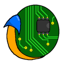
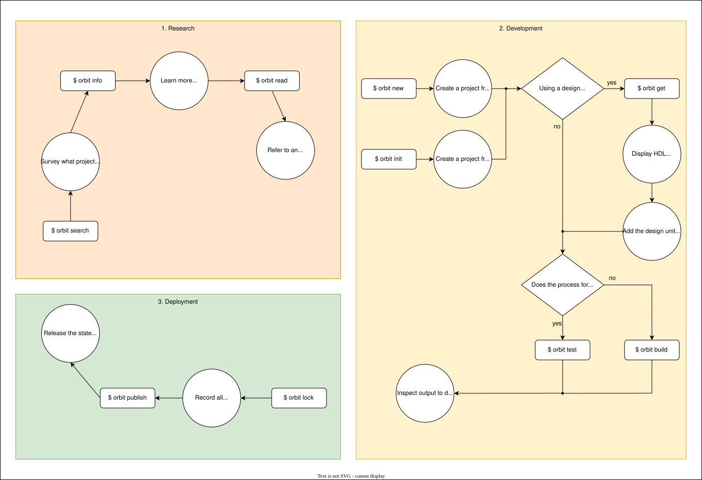
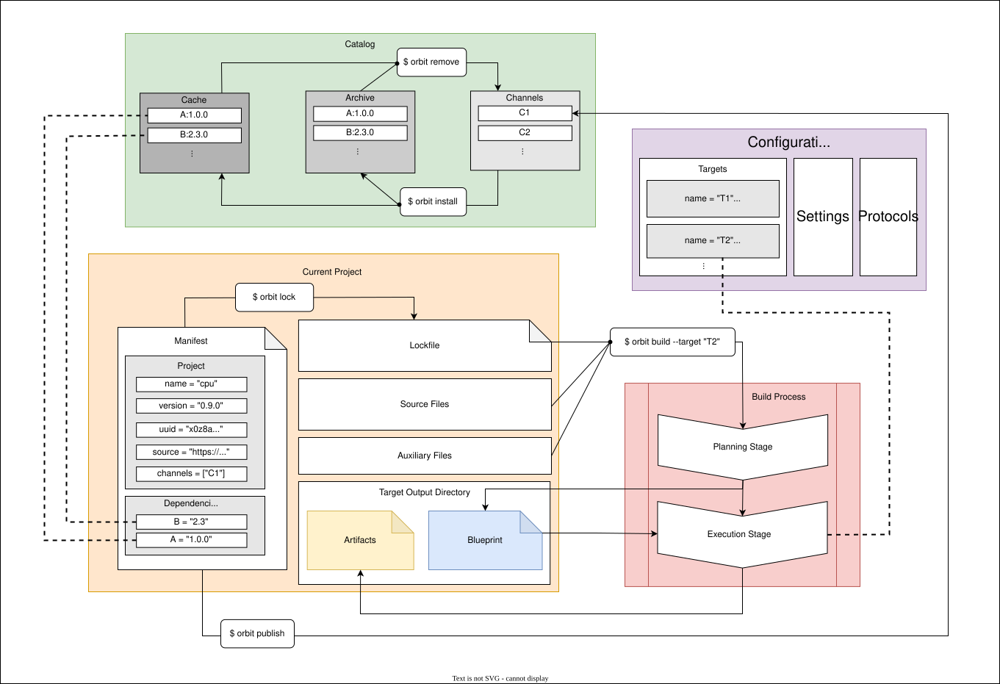
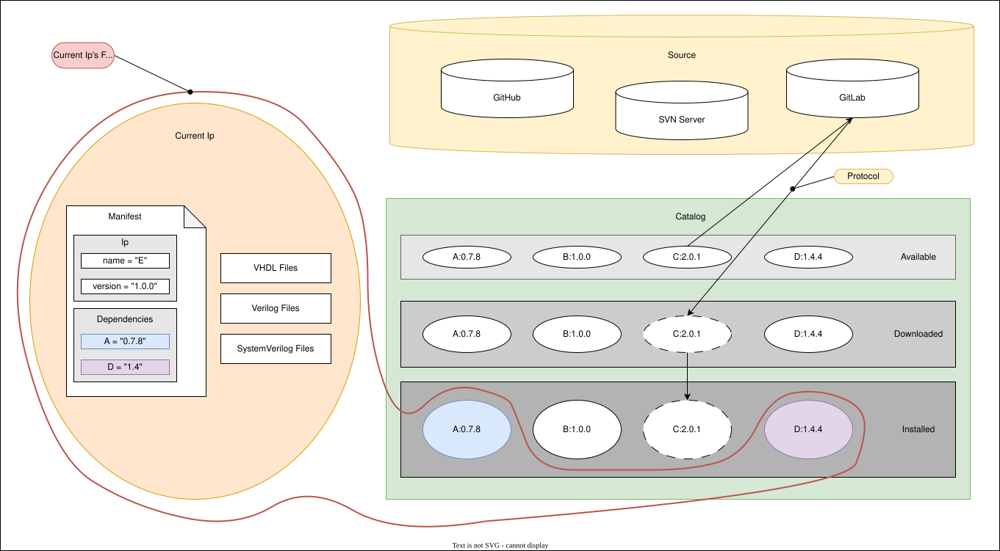
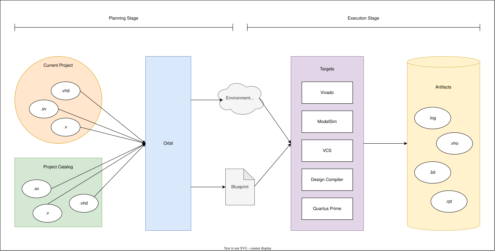

The Book of Orbit

Orbit is an agile package manager and extensible build tool for hardware description languages (HDL). Its design is driven by two core principles:
- Minimize technical debt associated with evolving HDL codebases
- Tailor to the wide range of users and their possible workflows with a high degree of modularity and extensibility
Orbit's use case is targeted toward anyone interested in developing digital hardware; this includes industrial, academic, and personal settings. Create your next commerical product, university lab assignment, or personal project, using a tool that is tailored to today's advanced development processes.
Sections
This book is loosely divided into 4 sections:
- Tutorials - Step-by-step lessons
- User Guide - How-to guides to solve common problems
- Topic Guide - Explanations that clarify and provide more details
- Reference - Technical information
About the Project
Orbit is available free to use and open source to encourage adoption, contribution, and integration among the hardware community. We rely on the open source community for feedback and new ideas, while remaining focused on our design goals and principles.
The project is currently open-source under the GPL-3.0 license and is available on GitHub.
About the Documentation
The documentation system and methodology adopted by Orbit is inspired by Divio.
Getting Started
This section walks you the basic steps to get Orbit up and running on your local computer.
Command Line Notation
Throughout this book there are commands shown that are used in a terminal. Lines that are entered in a terminal are denoted by starting with a
$. The$is just a special marker; it is not to be entered with the command. Lines that don't start with a$are typically the output of the previous command. Large segments of code blocks are typically contents of a file.
There are two processes to obtaining and maintaining Orbit:
Seeking Help
Orbit is a package manager and development tool. With learning new tools there is always a learning curve. Orbit tries to make it less intimidating to use by offering help and information in a variety of ways:
- To see a list of common commands and options, just use
orbitwith no arguments. - To view quick summaries on commands, use
-h, --helpflags. - To view more detailed manual pages and information, use
orbit help.
But since you are here, complete documentation can be found on this website.
Installing
There are two main methods for getting Orbit running on your computer: downloading a precompiled binary or by using Cargo.
Reminder: By installing and using Orbit, you accept usage under its GPL-3.0 license.
1. Using a precompiled binary
- Visit Orbit's releases page on Github to find all of its official releases.
- Download the binary for your computer's architecture and operating system.
- Install Orbit. Either run the provided
installexecutable or follow the manual instructions for placing Orbit's executable (orbitfor Unix andorbit.exefor Windows) in a location recognized by the PATH environment variable.
There are multiple solutions to accomplish step 3. The following outlines one way to manually install Orbit depending on the user's operating system.
Linux
- Download the latest prebuilt package.
curl -LO https://github.com/chaseruskin/orbit/releases/download/0.24.0/orbit-0.24.0-x86_64-unknown-linux-musl.tar.gz
- Extract the prebuilt package.
tar -xf orbit-0.24.0-x86_64-unknown-linux-musl.tar.gz -C orbit-0.24.0
- Move the executable to a location already set in the PATH environment variable.
mv ./orbit-0.24.0/bin/orbit /usr/local/bin/orbit
macOS
- Download the latest prebuilt package.
curl -LO https://github.com/chaseruskin/orbit/releases/download/0.24.0/orbit-0.24.0-x86_64-apple-darwin.tar.gz
- Extract the prebuilt package.
tar -xf orbit-0.24.0-x86_64-apple-darwin.tar.gz -C orbit-0.24.0
- Move the executable to a location already set in the PATH environment variable.
mv ./orbit-0.24.0/bin/orbit /usr/local/bin/orbit
Windows
-
Open a new terminal (Powershell) to where Orbit was downloaded.
-
Unzip the prebuilt package.
$ expand-archive "./orbit-0.24.0-x86_64-windows.zip" -DestinationPath "orbit-0.24.0"
- Make a new directory to store this package.
$ new-item -path "$env:LOCALAPPDATA/Programs/orbit" -itemtype directory
- Move the package to the new directory.
$ copy-item "./orbit-0.24.0/*" -destination "$env:LOCALAPPDATA/Programs/orbit" -recurse
- Edit the user-level PATH environment variable in Control Panel by adding %LOCALAPPDATA%\Programs\orbit\bin.
2. Installing with Cargo
To install the latest version through Cargo:
$ cargo install --git https://github.com/chaseruskin/orbit.git --bin orbit --tag 0.24.0
This will build the orbit binary and place it a path already set in the PATH environment variable.
Checking if Orbit is installed correctly
To verify Orbit is working correctly on your system, let's open a new terminal session and print it's current version.
$ orbit --version
orbit 0.24.0
This should print out your version of Orbit you installed.
You can also review the license for Orbit:
$ orbit --license
Copyright (C) 2022 - 2025 Chase Ruskin
This program is free software, covered by the GNU General Public License. There is NO warranty; not even for MERCHANTABILITY or FITNESS FOR A PARTICULAR PURPOSE.
Congratulations! You are now ready to begin using Orbit.
Upgrading
Once Orbit is installed, it can be self-upgraded to the latest official released version found on its Github repository.
$ orbit --upgrade
This behavior performs the following strategy:
-
Removes any executable in the executable's directory starting with
orbit-(these are considered stale binaries, such asorbit-0.1.0). -
Connects to https://github.com/chaseruskin/orbit/releases to find the most recent released version.
-
Checks if the most recent version online is ahead of the currently installed version.
Note: If the version online is newer, a prompt will appear to confirm you wish to install the new version. This prompt can be bypassed by adding the
--forceflag to the previous command.
-
Downloads the checksum file to a temporary directory to see if there is a prebuilt package available for the current architecture and operating system.
-
Downloads the package to a temporary directory and computes the checksum to verify the contents.
-
Renames the current executable by appending its version to the name (marking it as a stale binary, such as
orbit-0.1.1). -
Unzips the package and moves the new executable to the original executable's location.
Note: If you wish to remove the newly created stale binary after an upgrade, rerunning
orbit --upgradeimmediately again will perform step 1 and stop at step 3.
Tutorials
This section is learning-oriented, providing step-by-step lessons intended to teach new users how to start using Orbit.
The code provided in this section is very didactic in nature and is not intended to reflect production-level code or any particular coding style.
Prerequisites
While there is no assumption that you know how Orbit works, there are some other assumptions we put in place we believe will help you get the most out of this section:
- Basic knowledge of the command-line: how to navigate around your filesystem, enter commands, and analyze command outputs
- Basic knowledge of digital logic concepts and hardware description languages: understanding logic gates and at least one hardware description language, such as VHDL, Verilog, or SystemVerilog
- Basic knowledge of scripting languages: familiarity with a scripting language such as Python or Tcl
If you feel confident in these prerequisites, then you are ready to start your adventure learning Orbit!
First Project: Gates
In this tutorial, you will learn how to:
1. Create an ip from scratch
2. Use Orbit to integrate an entity into a larger design
3. Build a design using a simple target
4. Release a version of an ip
Creating an ip
First, navigate to a directory in your file system where you would like to store the project. From there, let's issue our first orbit command:
$ orbit new gates
A directory called "gates" should now exist and look like the following tree structure:
gates/
├── Orbit.lock
└── Orbit.toml
Let's create our first design unit for describing a NAND gate. Feel free to copy the following code into a file called "nand_gate.vhd" that exists in our project directory "/gates".
Filename: nand_gate.vhd
library ieee;
use ieee.std_logic_1164.all;
entity nand_gate is
port(
a, b : in std_logic;
x : out std_logic
);
end entity;
architecture rtl of nand_gate is
begin
x <= a nand b;
end architecture;
Integrating design units
Consider for an instant that our HDL only supports the nand keyword and is missing the other logic gates such as or, and, and xor.
Recalling our basic knowledge of digital circuits, we know a NAND gate is a universal gate, so let's compose other gates using our newly created nand_gate entity. Create a new file for our next design unit to describe an AND gate.
Filename: and_gate.vhd
library ieee;
use ieee.std_logic_1164.all;
entity and_gate is
port(
a, b : in std_logic;
y : out std_logic
);
end entity;
architecture rtl of and_gate is
begin
-- What to put here?
end architecture;
After some thinking, we realize we can use two NAND gates together to construct an AND gate. Let's use Orbit to help us integrate our nand_gate entity into the and_gate's architecture.
$ orbit get nand_gate --component --signals --instance
component nand_gate
port(
a : in std_logic;
b : in std_logic;
x : out std_logic
);
end component;
signal a : std_logic;
signal b : std_logic;
signal x : std_logic;
uX : nand_gate
port map(
a => a,
b => b,
x => x
);
With this single command, Orbit provided us with:
- the component declaration
- signals for the port interface
- an instantiation template
Sweet! After some quick copy/pasting and signal renaming, we have our architecture described for an AND gate.
Filename: and_gate.vhd
library ieee;
use ieee.std_logic_1164.all;
entity and_gate is
port(
a, b : in std_logic;
y : out std_logic
);
end entity;
architecture rtl of and_gate is
component nand_gate
port(
a : in std_logic;
b : in std_logic;
x : out std_logic
);
end component;
signal x : std_logic;
begin
u1 : nand_gate
port map(
a => a,
b => b,
x => x
);
u2 : nand_gate
port map(
a => x,
b => x,
x => y
);
end architecture;
Let's make a quick check to verify our and_gate is using our nand_gate.
$ orbit tree
and_gate
└── nand_gate
Cool! We got a hierarchical view of our top-most design unit.
Building an ip for a scripted workflow
After all of our hard work, we are excited to show off our latest design on the newest Yilinx FPGA that just arrived in the mail. You realize you need a way to get your HDL code to the Yilinx synthesis tool in order to generate the final bitstream for your FPGA.
To make this possible, Orbit builds a project through two stages: planning and execution. Although both stages occur together, users must define their own targets to be invoked during execution. This explicit separation of layers between planning and execution enable the user to tailor the build process to their specific requirements.
Creating a target
A target is a command invoked by Orbit for execution during the build process. In this example, we will write a script and have our target's command call our script to execute our process. In other words, you could say we are targeting the Yilinx tool. Let's make a simple target for our Yilinx synthesis tool using the Python programming language.
Filename: .orbit/yilinx.py
file_order = []
# Read and parse the blueprint file
with open('blueprint.tsv') as blueprint:
rules = blueprint.readlines()
for r in rules:
fileset, lib, path = r.strip().split('\t')
if fileset == 'VHDL':
file_order += [(lib, path)]
pass
# Use the Yilinx tool to perform synthesize on the HDL files
for (lib, path) in file_order:
print('YILINX:', 'Synthesizing file ' + str(path) +' into ' + str(lib) + '...')
# Use the Yilinx tool to perform placement and routing
print('YILINX:','Performing place-and-route...')
# Use the Yilinx tool to generate the bitstream
print('YILINX:', 'Generating bitstream...')
with open('fpga.bit', 'w') as bitstream:
bitstream.write('011010101101' * 2)
print('YILINX:','Bitstream saved at: target/yilinx/fpga.bit')
For Orbit to know about our target, we need to give information to Orbit about the target. This is done in a configuration file. For this example, we edit the project-level configurations.
Filename: .orbit/config.toml
[[target]]
name = "yilinx"
description = "Generate bitstreams for Yilinx FPGAs"
command = "python"
args = ["yilinx.py"]
Calling a target
$ orbit build --target yilinx
info: lockfile experienced no changes
info: top-level set to and_gate
info: blueprint created at: "/Users/chase/Develop/rust/orbit/gates/target/yilinx/blueprint.tsv"
info: executing target yilinx
YILINX: Synthesizing file /Users/chase/tutorials/gates/nand_gate.vhd into gates...
YILINX: Synthesizing file /Users/chase/tutorials/gates/and_gate.vhd into gates...
YILINX: Performing place-and-route...
YILINX: Generating bitstream...
YILINX: Bitstream saved at: target/yilinx/fpga.bit
Typically, we create targets to interface with EDA tools which will in turn produce desired output files, called artifacts. We see Yilinx saved our bitstream artifact for us to program our FPGA. Cool!
Filename: target/yilinx/fpga.bit
011010101101011010101101
Making an ip and its design units reusable
Now we are ready to move on to more advanced topics, so let's go ahead and store an immutable reference to this project to use in other projects in our developer journey.
$ orbit install
This command ran a series of steps that packaged our project and placed it into our cache. Internally, Orbit knows where our cache is and can reference designs from our cache when we request them. Let's make sure our project was properly installed by viewing our entire ip catalog.
$ orbit search
gates 0.1.0 install 8ah2qa261k8wgv55sd1qq17w9
And there it is! You may notice your UUID (the random 25 characters and numbers) is different, and that is expected behavior. Let's continue to the next tutorial, where we introduce dependencies across ips.
Additional notes on project structure
Our final project structure looks like the following:
gates/
├── .orbit/
│ ├── config.toml
│ └── yilinx.py
├── target/
│ ├── CACHEDIR.TAG
| └── yilinx/
│ ├── .env
│ ├── blueprint.tsv
│ └── fpga.bit
├── Orbit.toml
├── Orbit.lock
├── and_gate.vhd
└── nand_gate.vhd
-
The configurations stored in "/.orbit" exist only for this project; to store configurations that persist across projects make changes to the $ORBIT_HOME directory.
-
Orbit creates an output directory to store the blueprint and any tool output files during a build. These files should reside in "/target" and may change often during development (probably don't check this directory into version control).
-
Orbit creates a lock file "Orbit.lock" to store all the information required to manage and recreate the exact state of this project. It is a good idea to always keep it and to not manually edit it (probably be sure to check this file into version control).
Dependencies: Half adder
In this tutorial, you will learn how to:
1. Specify an external ip as a dependency
2. Use Orbit to learn more about external ips and their design units
3. Leverage Orbit across ips to integrate an entity into a separate ip
Referencing external ips
After completing the gates project from the previous tutorial ahead of schedule, you take a well deserved vacation. Now you have returned to work and are tasked with building a half adder.
Let's create a new project. Navigate to a directory in your file system where you would like to store the project.
$ orbit new half-add --lib adding
For the rest of this tutorial, we will be working relative to the project directory "/half-add" that was created by the previous command.
Remembering our impressive work with the gates project, we realize we can reuse some of the already designed and tested components from there. Let's make sure it's installed so that we can use it.
$ orbit search gates
gates 0.1.0 install 8ah2qa261k8wgv55sd1qq17w9
Awesome! Our next step is tell Orbit that our current project, half-add, wants to use gates as a dependency.
Add a new entry for gates to the dependencies table in our project's manifest, Orbit.toml.
Filename: Orbit.toml
[ip]
name = "half-add"
version = "0.1.0"
uuid = "7ddyiof2rzj3g8onn4tfzb69a"
library = "adding"
[dependencies]
gates = "0.1.0" # Add the dependency here!
We've referenced it, now we have to use it!
Learning about ips
Your memory is a little foggy on what gates actually did, and what entities were available. Luckily, we can query for information through Orbit about ips and their design units.
Let's remember what entities we have at our disposal.
$ orbit info gates --units
and_gate entity public
nand_gate entity public
Okay, how did we implement the NAND gate architecture?
$ orbit read --ip gates nand_gate --start architecture
architecture rtl of nand_gate is
begin
x <= a nand b;
end architecture;
Cool, we had used the VHDL keyword nand to describe that particular circuit. Sometimes it may be insightful to read code snippets and comments from external design units when trying to integrate them into a new project.
Integrating design units across ips
Let's use the NAND gate we previously defined to construct a half adder circuit. We can use the shorthand switches -s and -i for the --signals and --instance flags, respectively.
$ orbit get --ip gates nand_gate -si
signal a : std_logic;
signal b : std_logic;
signal x : std_logic;
uX : entity gates.nand_gate
port map(
a => a,
b => b,
x => x
);
A half adder can be constructed with 5 NAND gates. It's time to copy/paste our NAND gate instances into our new file "half_add.vhd".
Filename: half_add.vhd
library ieee;
use ieee.std_logic_1164.all;
library gates;
entity half_add is
port(
a, b : in std_logic;
c, s : out std_logic
);
end entity;
architecture rtl of half_add is
signal x4, x1, x2 : std_logic;
begin
-- 1st layer: This gate creates the first NAND intermediate output.
u4 : entity gates.nand_gate
port map(
a => a,
b => b,
x => x4
);
-- 2nd layer: Perform NAND with input 'a' and the 1st layer's output.
u1 : entity gates.nand_gate
port map(
a => a,
b => x4,
x => x1
);
-- 2nd layer: Perform NAND with input 'b' and the 1st layer's output.
u2 : entity gates.nand_gate
port map(
a => x4,
b => b,
x => x2
);
-- 3rd layer: This gate produces the final sum signal ('a' XOR 'b').
u3 : entity gates.nand_gate
port map(
a => x1,
b => x2,
x => s
);
-- 3rd layer: This gate produces the final carry out signal ('a' AND 'b').
u5 : entity gates.nand_gate
port map(
a => x4,
b => x4,
x => c
);
end architecture;
Let's inspect the design hierarchy to make sure our circuit and its components are identified by Orbit.
$ orbit tree --format long
half_add (half-add:0.1.0)
└── nand_gate (gates:0.1.0)
Finally, let's install this ip to the cache for future reuse as well. But before we can install any ip to our cache, an ip must have an up to date lockfile.
Lockfiles are updated whenever a user calls orbit build or orbit test, but they can also be updated with the dedicated orbit lock command. Let's go ahead and generate the lockfile now.
$ orbit lock
Now we can safely install the ip to our catalog.
$ orbit install
Nice, now we have successfully reused designs across ips! However, maybe we should have designed all the logic gates in the gates ip...
Additional notes on dependencies
Before integrating a design unit from an external ip into a separate project, it's important to first update the Orbit.toml file. This manifest file has a dependencies section, which allows you to tell Orbit which ips to bring into the current project scope. Without the ips in scope, Orbit may be unable to identify where you got a reference for a particular design unit. Orbit denotes an unknown design unit with a ? when displaying the design hierarchy.
half_add (half-add:0.1.0)
└─ nand_gate ?
After introducing dependencies at the project level, it's also important to maintain an up-to-date lockfile, Orbit.lock. In most cases, Orbit will automatically generate it when it needs it, however, you as the user can also explicitly request Orbit to update the lockfile.
$ orbit lock
The lockfile saves information for Orbit to use later when needing to reconstruct the state of an ip. This includes saving information about all ip dependencies, their checksums, and potential sources of retrieval. Remember, the Orbit.lock file is automatically managed by Orbit and does not require direct user editing.
Gates: Revisited
In this tutorial, you will learn how to:
1. Edit an existing ip
2. Use environment variables and command-line arguments to create more robust targets
3. Release the next version for an existing ip
Editing the gates ip
It seems we left out some logic gates when we last worked on the gates project, so let's implement them now. Navigate to the directory in your file system where you currently store the gates project.
For the rest of this tutorial, we will be working relative to the project directory "/gates" that currently stores the gates project.
Let's implement the OR gate while restricting our design to only NAND gates like before.
$ orbit get nand_gate -lsi
library work;
signal a : std_logic;
signal b : std_logic;
signal x : std_logic;
uX : entity work.nand_gate
port map(
a => a,
b => b,
x => x
);
An OR gate can be constructed using 3 NAND gates. Let's copy/paste our NAND gate instances into our new file "or_gate.vhd".
Filename: or_gate.vhd
library ieee;
use ieee.std_logic_1164.all;
library work;
entity or_gate is
port(
a, b : in std_logic;
y : out std_logic
);
end entity;
architecture rtl of or_gate is
signal x1, x2 : std_logic;
begin
-- 1st layer: This gate negates the first input 'a'.
u1 : entity work.nand_gate
port map(
a => a,
b => a,
x => x1
);
-- 1st layer: This gate negates the second input 'b'.
u2 : entity work.nand_gate
port map(
a => b,
b => b,
x => x2
);
-- 2nd layer: This gate produces the final output ('a' OR 'b').
u3 : entity work.nand_gate
port map(
a => x1,
b => x2,
x => y
);
end architecture;
Showing the list of possible design units for the current project should now include the OR gate entity.
$ orbit info --units
and_gate entity public
nand_gate entity public
or_gate entity public
Extending the Yilinx target
Next, we want to program our Yilinx FPGA with the OR gate design to test it on the board. However, there are some quick updates we first want to apply to the ".orbit/yilinx.py" script.
- We want a way to specify which I/O pins of the FPGA will be used during placement and routing
- We want a way to specify whether to program the FPGA bitstream to SRAM storage (volatile) or flash storage (nonvolatile).
After searching through Yilinx documentation for hours, you learn that the Yilinx design tool can accept .ydc files for FPGA pin assignments. Let's edit our yilinx target to collect any .ydc files our project may have during Orbit's planning step.
Filename: .orbit/config.toml
[[target]]
name = "yilinx"
command = "python"
description = "Generate bitstreams for Yilinx FPGAs"
args = ["yilinx.py"]
# Define the type of extra file(s) to collect during planning
fileset.YDCF = "*.ydc"
Now let's create our pin assignment file for our OR gate design.
Filename: pins.ydc
A1=a
A2=b
C7=y
Next, let's edit the Python script for the yilinx target to allow the Yilinx tool to use our .ydc file if we ever collect one into our blueprint file. We also want to accept command-line arguments to optionally program our FPGA using SRAM or flash storage.
Filename: .orbit/yilinx.py
import sys, os
# Handle command-line arguments
PROG_SRAM = bool(sys.argv.count('--sram') > 0)
PROG_FLASH = bool(sys.argv.count('--flash') > 0)
# Get environment variables set by orbit for this particular build
BLUEPRINT = os.environ.get("ORBIT_BLUEPRINT")
OUTPUT_PATH = os.environ.get("ORBIT_OUTPUT_PATH")
TOP_LEVEL = os.environ.get("ORBIT_TOP_NAME")
synth_order = []
constraints_file = None
# Parse the blueprint file created by orbit
with open(BLUEPRINT) as blueprint:
rules = blueprint.readlines()
for r in rules:
fileset, lib, path = r.strip().split('\t')
if fileset == 'VHDL':
synth_order += [(lib, path)]
if fileset == 'YDCF':
constraints_file = path
pass
# Run the Yilinx tool from synthesis to bistream generation
for (lib, path) in synth_order:
print('YILINX:', 'Synthesizing file ' + str(path) + ' into ' + str(lib) + '...')
print('YILINX:','Performing place-and-route...')
# Read the Yilinx design constraints file to map pins to I/O top-level ports.
if constraints_file != None:
with open(constraints_file, 'r') as ydc:
mapping = [x.strip().split('=') for x in ydc.readlines()]
for pin, port in mapping:
print('YILINX:', 'Mapping pin ' + str(pin) + ' to port ' + str(port) + '...')
pass
print('YILINX:', 'Generating bitstream...')
BIT_FILE = TOP_LEVEL + '.bit'
with open(BIT_FILE, 'w') as bitstream:
for byte in [bin(b)[2:] for b in bytes(TOP_LEVEL, 'utf-8')]:
bitstream.write(byte)
print('YILINX:','Bitstream saved at: '+ str(OUTPUT_PATH + '/' + BIT_FILE))
# Optionally allow the user to program the FPGA using flash or SRAM configuration
if PROG_FLASH == True and PROG_SRAM == False:
print('YILINX:', 'Programming bitstream to flash...')
elif PROG_SRAM == True:
print('YILINX:', 'Programming bitstream to SRAM...')
With all these changes, we can now go ahead and program our FPGA as we want!
To execute our latest changes to our Yilinx target build process, let's use orbit build. Recall that this command can be divided into two distinct stages: planning and execution. Planning is completed by Orbit once it generates a blueprint file. During planning, it looked at what files the target also requests under it's fileset TOML configuration.
$ orbit build --target yilinx --top or_gate -- --flash
Let's take a look at the blueprint file Orbit created during the build process.
Filename: target/yilinx/blueprint.tsv
YDCF gates /Users/chase/tutorials/gates/pins.ydc
VHDL gates /Users/chase/tutorials/gates/nand_gate.vhd
VHDL gates /Users/chase/tutorials/gates/or_gate.vhd
Notice also how we passed a command-line argument --flash, to our target process for execution. Any arguments that are found after -- are ignored by Orbit and sent directly to the targeted process.
Reviewing the output from our target's execution, we see that our FPGA was programmed successfully.
YILINX: Synthesizing file /Users/chase/tutorials/gates/nand_gate.vhd into gates...
YILINX: Synthesizing file /Users/chase/tutorials/gates/or_gate.vhd into gates...
YILINX: Performing place-and-route...
YILINX: Mapping pin A1 to port a...
YILINX: Mapping pin A2 to port b...
YILINX: Mapping pin C7 to port y...
YILINX: Generating bitstream...
YILINX: Bitstream saved at: target/or_gate.bit
YILINX: Programming bitstream to flash...
As expected, the bitstream is also written and saved within our target's output path.
Filename: target/yilinx/or_gate.bit
1101111111001010111111100111110000111101001100101
Awesome! We added some pretty advanced settings to our yilinx target to make it more robust for future use. Let's configure this target to be used with any of our ongoing projects by editing the global configuration file through the command-line.
$ orbit config --push include="$(orbit env ORBIT_MANIFEST_DIR)/.orbit/config.toml"
Now when we call Orbit from any directory, we can see our yilinx target is available to use.
$ orbit build --list
yilinx Generate bitstreams for Yilinx FPGAs
Rereleasing the gates ip
We made changes to the gates ip, and now we want to have the ability to use these new updates or continue using the old changes. To do this, we want to update the version number in the manifest file. Let's edit the Orbit.toml file's version field to contain version "1.0.0".
Filename: Orbit.toml
[ip]
name = "gates"
version = "1.0.0" # Update the version to 1.0.0!
uuid = "8ah2qa261k8wgv55sd1qq17w9"
[dependencies]
Finally, let's update the lockfile and release version 1.0.0 for the gates ip by installing it to our cache.
$ orbit lock
$ orbit install
One last look at the catalog shows the latest version of gates we have installed is indeed 1.0.0. Nice work!
$ orbit search gates
gates 1.0.0 install
We can see that our previous version of gates is still available too; by default, the search command will report the highest known version for an ip.
$ orbit info gates --versions
1.0.0 install
0.1.0 install
Final Project: Full adder
In this tutorial, you will learn how to:
1. Depend on multiple ips for a single project
2. Use Orbit to overcome namespace pollution
3. Build a project with a globally-configured target
Specifying multiple dependencies for an ip
After the quick detour back to the gates ip, we are ready to tackle our final challenge in this mini tutorial series: the full adder. Like our previous projects, navigate to a directory in your file system where you would like to store the project.
orbit new full-add --lib adding
For the rest of this tutorial, we will be working relative to the project directory "/full-add" that currently stores our new full-add project.
For this final project, we will need circuits described in both the gate ip and half-add ip. Let's quickly recall if version 1.0.0 of gates has the OR gate we will need.
$ orbit info gates:1.0.0 --units
and_gate entity public
nand_gate entity public
or_gate entity public
Yup! It's there, and we know we will need some half adders as well. Let's add both ips to our manifest file.
filename: Orbit.toml
[ip]
name = "full-add"
version = "0.1.0"
uuid = "9pu41jrkfhwq646bfw4g7o9ah"
library = "adding"
[dependencies]
gates = "1.0.0" # Add the gates ip as a dependency!
half-add = "0.1.0" # Add the half-add ip as a dependency too!
Okay, time to start coding!
Overcoming HDL problems: Namespace pollution
Our full adder circuit will be constructed of 2 half adders and an OR gate. Let's collect some HDL code snippets to use for our full adder circuit.
$ orbit get half_add --ip half-add -li
library adding;
uX : entity adding.half_add
port map(
a => a,
b => b,
c => c,
s => s
);
Remember, we can use the shorthand switches -l and -i for the --library and --instance flags respectively. Let's also get the code snippet for the OR gate.
$ orbit get or_gate --ip gates:1.0.0 -li
library gates;
uX : entity gates.or_gate
port map(
a => a,
b => b,
y => y
);
Let's combine these circuits together into our new file for our full adder implementation.
Filename: full_add.vhd
library ieee;
use ieee.std_logic_1164.all;
library adding;
library gates;
entity full_add is
port(
a, b, cin : in std_logic;
cout, s : out std_logic
);
end entity;
architecture rtl of full_add is
signal c_ha0, s_ha0, c_ha1 : std_logic;
begin
-- 1st layer: Peform half of the addition operation.
u_ha0 : entity adding.half_add
port map(
a => a,
b => b,
c => c_ha0,
s => s_ha0
);
-- 2nd layer: Compute the final sum term.
u_ha1 : entity adding.half_add
port map(
a => s_ha0,
b => cin,
c => c_ha1,
s => s
);
-- 3rd layer: Check both c terms from the half adders for the final cout term.
u_or0 : entity gates.or_gate
port map(
a => c_ha0,
b => c_ha1,
y => cout
);
end architecture;
Our design heirarchy is getting more complex; we have full adders constructed of half adders and OR gates, half adders constructed of NAND gates, OR gates constructed of... uh-oh. More NAND gates.
The NAND gate design unit used in the OR gates is different from NAND gates used in the half adders because they reside in different versions of the gates ip (essentially different ips). So did we just define an NAND gate entity twice with the same identifier? Yes, and thanks to Orbit, this situation is okay.
Huh?
Typical EDA tools will complain and error out when primary design units share the same name. How would they know which one is being used where? Fortunately, Orbit is one step ahead of these tools due to implementing an algorithm called dynamic symbol transformation.
Let's take a look at the design tree hierarchy. You may notice something interesting.
$ orbit tree --format long
full_add (full-add:0.1.0)
├── or_gate (gates:1.0.0)
│ └── nand_gate (gates:1.0.0)
└── half_add (half-add:0.1.0)
└── nand_gate_9f476275c5 (gates:0.1.0)
The entities from gates version 0.1.0 and version 1.0.0 are allowed to co-exist in this design. To circumvent EDA tool problems during builds, Orbit appends the beginning checksum digits from the ip of the unit in conflict to the design unit's identifier. Any design units that referenced the unit in conflict will also be updated to properly reference the new identifier for the unit in conflict.
To us though, these slight identifier renamings remain hidden because they occur among indirect dependencies in relation to our current project. When deciding which design unit to rename, Orbit will always choose to rename the unit that is used as an indirect dependency. This key choice allows us to keep using the original unit name when integrating design units into the current project.
Okay, so what?
This may be a silly example, but there is a key takeaway here. Designs are constantly evolving. When creating the latest module, you never know what will come next. By allowing the state of a design to live on while also providing support for new growth, a user no longer spends their time trying to manage compatibility among the increasingly interconnected dependencies. Instead, there exists a freedom to continue to innovate.
Reusing targets that are globally-configured
To conclude this mini tutorial series, let's generate a bitstream for the Yilinx FPGA with our full adder implementation.
First, let's verify our yilinx target is available to us after appending it to our global configuration file in the previous tutorial.
$ orbit build --list
yilinx Generate bitstreams for Yilinx FPGAs
We can review more details about a particular target by specifying it with the "--target" command-line option while providing "--list" as well.
$ orbit build --list --target yilinx
name = "yilinx"
description = "Generate bitstreams for Yilinx FPGAs"
command = "python"
args = ["/Users/chase/Develop/rust/orbit/gates/.orbit/yilinx.py"]
[fileset]
YDCF = "**/*.ydc"
Let's build our current project using the yilinx target for our full adder.
$ orbit build --target yilinx --top full_add
Opening the blueprint file created by Orbit during the planning stage shows we are indeed using different files for the different NAND gate design units, and the files are in a topologically-sorted order.
Filename: target/yilinx/blueprint.tsv
VHDL gates /Users/chase/.orbit/cache/8ah2qa261k8wgv55sd1qq17w9-0.1.0-5ac118b44a7b0979/nand_gate.vhd
VHDL adding /Users/chase/.orbit/cache/7ddyiof2rzj3g8onn4tfzb69a-0.1.0-75f13b27d846a006/half_add.vhd
VHDL gates /Users/chase/.orbit/cache/8ah2qa261k8wgv55sd1qq17w9-1.0.0-76c0c7e4bbf66769/nand_gate.vhd
VHDL gates /Users/chase/.orbit/cache/8ah2qa261k8wgv55sd1qq17w9-1.0.0-76c0c7e4bbf66769/or_gate.vhd
VHDL adding /Users/chase/tutorials/full-add/full_add.vhd
Inspecting the output displayed to the console shows our target executed it's process successfully with the creation of a .bit file.
info: lockfile updated
info: top-level set to full_add
info: blueprint created at: "/Users/chase/Develop/rust/orbit/full-add/target/yilinx/blueprint.tsv"
info: executing target yilinx
YILINX: Synthesizing file /Users/chase/.orbit/cache/8ah2qa261k8wgv55sd1qq17w9-0.1.0-5ac118b44a7b0979/nand_gate.vhd into gates...
YILINX: Synthesizing file /Users/chase/.orbit/cache/7ddyiof2rzj3g8onn4tfzb69a-0.1.0-75f13b27d846a006/half_add.vhd into adding...
YILINX: Synthesizing file /Users/chase/.orbit/cache/8ah2qa261k8wgv55sd1qq17w9-1.0.0-76c0c7e4bbf66769/nand_gate.vhd into gates...
YILINX: Synthesizing file /Users/chase/.orbit/cache/8ah2qa261k8wgv55sd1qq17w9-1.0.0-76c0c7e4bbf66769/or_gate.vhd into gates...
YILINX: Synthesizing file /Users/chase/tutorials/full-add/full_add.vhd into adding...
YILINX: Performing place-and-route...
YILINX: Generating bitstream...
YILINX: Bitstream saved at: target/yilinx/full_add.bit
Great work! This marks the end to this tutorial series, but the beginning of your experience with Orbit, an agile package manager and extensible build tool for HDLs.
User Guide
This section is goal-oriented, providing answers to questions through a series of steps for users that have some experience with Orbit.
If you have not used Orbit yet, it is recommended to start with the Tutorials section.
How to Use Orbit
Orbit provides commands through the command-line interface to help at every stage in the hardware development cycle.

Hardware development cycle
The hardware development cycle can be loosely divided into three main stages:
-
Research/Planning: Define a project's goals, scope, requirements, and identify any existing solutions that can be reused
-
Design/Development: Create the architecture, implement the system's functionalities, and verify the design meets the requirements through testing
-
Deployment/Maintenance: Release the project to the production environment to make it accessible to its users while providing ongoing updates, bug fixes, and new features over time
Development process
1. Research
At the start of any project, it's important to survey existing work to identify any related projects that either already meet your requirements or can be used to help meet your requirements.
-
Orbit helps you quickly survey what projects exist in the ip catalog with
orbit search. This will return a list of all projects available in the ip catalog, their latest version, their status (installed, downloaded, available), and its unique identifier. -
Further refining your search to get more information about a particular project can be done with
orbit info. This command can display data pulled from the ip's manifest, what design units it contains, the different versions of the project, and other data related to that project. -
After finding a design unit of interest within a particular project, a reference to that design unit's source code can be made available with
orbit read. If the source code is well-documented and written in a clear manner, then this referring to the source code can help easily understand if using this particular design unit will be able to help you in your next project.
Tip: The read operation works especially well with a command-line pager such as
less, allowing the source code contents to be easily navigated by piping it as input to the pager.
2. Development
The bulk of time and resources for any project takes place during the development stage. In this stage, the project's architecture is created, the system's functionalities are implemented, and checked to make sure they meet the project's requirements through testing.
-
Using any design units from existing ip in your latest project can be quickly achieved using
orbit get. This command will return the necessary HDL code snippets to correctly instantiate a design unit. Simply adding the external ip's name and version to the current project's[dependencies]table within theOrbit.tomlfile will allow Orbit to record the information necessary to correctly reference the design unit's within that ip. -
Running a build process on a new design unit that does not require a testbench can be achieved with
orbit build. By configuring and specifying a target, this command gives you the power to run any particular workflow for your set of tools and unique demands, such as performing synthesis. -
Running a build process to verify a new design unit with its accompanied testbench can be achieved with
orbit test. This command requires the user to configure and specify a target similiar toorbit build, but under the intention that a testbench is required, perhaps for running a simulation.
3. Deployment
After a project has been successfully developed and meets its specified goals and requirements, it can be deployed to its production environment and made available to its users.
-
A detailed record of how to reproduce the project using Orbit can created with
orbit lock. This command will generate a lockfile,Orbit.lock, which saves all the information about the current project and its dependencies such that the exact state of the project can be reproduced at a later time in any environment. -
Securing the current state of the project as a release (such as version 1.0.0) for others to find is done using
orbit publish. This command verifies the current project's state is valid in the context of Orbit and then installs it to your local ip catalog as well as posts its manifest to any of its configured channels. By posting the ip to a channel, any other users who also have the same channel configured will be able to see the newly available project.
And with that, the cycle continues. As new features, bug fixes, and improvements are brought forth over time, users can repeat the following process to produce another release for any given project.
Researching Ip
During the lifecycle of an ip, the first step in the process is typically to research existing work and identify any components which may be of value in reusing as a dependency for the new ip. This section highlights different ways to discover and gain information about existing ips and their design units.
Assumptions
The guides in this section place no assumption on where your working directory is when running any commands; that is, these commands can be ran from any directory.
Guides
- Viewing existing ip
- Gathering information about an ip
- Gathering information about a design unit
- Reading source code of a design unit
Viewing existing ip
This guide outlines how to see what ips exist on your system in your catalog that could be potentially used as a dependency.
- Display all results from the catalog:
$ orbit search
This will return a list of the ip, where each line records the ip name, latest known version, status in the catalog, and uuid.
Gathering information about an ip
This guide outlines how to view more information about an ip found in your catalog that may be of particular interest.
- Identify the name of an ip in the catalog that may be of interest:
$ orbit search
- Return the list of all possible versions of the ip in the catalog, where
<ip>is the name of the ip of interest:
$ orbit info <ip> --versions
- Return the metadata found in the ip's manifest, where
<ip>is the name of the ip of interest and<vesion>is the version of the ip of interest:
$ orbit info <ip>:<version>
- Return the list of accessible design units for the ip, where
<ip>is the name of the ip of interest and<version>is the version of the ip of interest:
$ orbit info <ip>:<version> --units
This will return a list of the ip's design units, where each line records the design unit's name, design unit type, and accessibility.
Gathering information about a design unit
This guide outlines how to view a design unit's declaration for a particular design unit of an ip found in the catalog.
- Return the design unit's declaration, where
<unit>is the name of the design unit,<ip>is the name of the ip of interest, and<version>is the version of the ip of interest:
$ orbit get <unit> --ip <ip>:<version>
Reading source code of a design unit
This guide outlines how to view the source code for a particular design unit of an ip found in the catalog.
- Display the contents from the design unit's source file, where
<unit>is the name of the design unit,<ip>is the name of the ip of interest, and<version>is the version of the ip of interest:
$ orbit read <unit> --ip <ip>:<version>
Tip: For large source files, it may be helpful to redirect the output to a temporary file, or use the
--saveflag to automatically write the results to a temporary read-only file.
Developing Ip
Once existing work has been evaluated and the requirements for an ip are defined, the next step is typically to begin developing the actual logic for the ip. This section walks through the common steps to building new ip and integrating with existing ip.
Assumptions
The guides in this section, except for the ones on creation and initialization of an ip, assume you are running commands from the root directory or any subdirectory of the current ip. The current ip, also sometimes referred to as the local ip, is the ip being actively developed.
This section also assumes you have one or more targets already configured. To learn how to create targets, see Creating Targets.
Guides
- Creating a new ip
- Initializing an existing project as an ip
- Integrating a design unit internal to the current ip
- Integrating a design unit external to the current ip
- Viewing the design hierarchy
- Viewing available targets for testing
- Running a test
- Viewing available targets for building
- Running a build
Creating a new ip
- Create a new directory as an Orbit ip by also creating a basic manifest file, where
<ip>is the name of the new directory as well as the name of the newly created ip:
$ orbit new <ip>
- Enter the root directory for the newly created ip to begin working within it, where
<ip>is the name of the newly created ip's directory:
$ cd <ip>
Initializing an existing project as an ip
- Enter the root directory for the existing project, where
<project>is the root directory:
$ cd <project>
- Initialize the current working directory as an Orbit ip by creating a basic manifest file, where
<ip>is the name of the newly initialized ip:
$ orbit init --name <ip>
Integrating a design unit internal to the current ip
- Add the necessary code in the current ip's source files referencing the internal design unit as normal. For design units that are entities or modules, return code snippets that can be used to declare IO signals and instantiate the design unit:
$ orbit get <unit> --signals --instance
- Verify the dependencies are correctly discovered in the design hierarchy:
$ orbit tree --edges all --format long
Integrating a design unit external to the current ip
- Add the external ip as a dependency to the current ip's manifest, where
<ip>is the name of the external ip and<version>is the version of the external ip:
[dependencies]
# ...
<ip> = "<version>"
- Add the necessary code in the current ip's source files referencing the external design unit as normal. For design units that are entities or modules, return code snippets that can be used to declare IO signals and instantiate the design unit:
$ orbit get <unit> --ip <ip>:<version> --signals --instance
- Verify the dependencies are correctly discovered in the design hierarchy:
$ orbit tree --edges all --format long
For more ways on how to add dependencies, see Specifying Dependencies.
Viewing the design hierarchy
- Return the list of known design units for the current ip:
$ orbit info --units
- View the design hierarchy for a particular design unit within the current ip, where
<unit>is the name of the design unit of interest:
$ orbit tree <unit>
Viewing available targets for testing
- View the list of available targets configured to run using the test entry point:
$ orbit test --list
- Return the configuration data of a particular test target, where
<target>is the name of the target of interest:
$ orbit test --list --target <target>
Running a test
- Start the build process using the test entry point for a particular testbench and particular target, where
<unit>is the testbench name of interest and<target>is the name of the desired target:
$ orbit test --tb <unit> --target <target>
- Inspect the resulting command-line outputs and any files generated to the target's output directory.
Tip: You can also provide additional arguments on the command-line to the target's command that will run during the execution stage of the build process. Add any arguments after an empty flag
--for Orbit to skip processing them and instead pass them to the target's command.$ orbit test --tb <unit> --target <target> -- <args>...
Viewing available targets for building
- View the list of available targets configured to run using the build entry point:
$ orbit build --list
- Return the configuration data of a particular build target, where
<target>is the name of the target of interest:
$ orbit build --list --target <target>
Running a build
- Start the build process using the build entry point for a particular top-level design unit and particular target, where
<unit>is the top-level name of interest and<target>is the name of the desired target:
$ orbit build --top <unit> --target <target>
- Inspect the resulting command-line outputs and any files generated to the target's output directory.
Tip: You can also provide additional arguments on the command-line to the target's command that will run during the execution stage of the build process. Add any arguments after an empty flag
--for Orbit to skip processing them and instead pass them to the target's command.$ orbit build --top <unit> --target <target> -- <args>...
Releasing Ip
After the ip has been tested and developed to its specification, it may be ready to give its implementation a meaningful version and release it for others to use. This section walks through the common steps to successfully prepare and deploy an ip for use in future ips.
Assumptions
The guides in this section assume you are running commands from the root directory or any subdirectory of the current ip. The current ip, also sometimes referred to as the local ip, is the ip being actively developed.
This section also assumes you have one or more channels already configured. To learn how to create channels, see Creating Channels.
Although not strictly necessary, you may also need to have a protocol configured that meets your requirements for how you access an ip from the internet. To learn how to create protocols, see Creating Protocols.
Guides
Installing an ip to the catalog
This guide walks through the steps to install an ip from the local file system to the catalog. In this example, we assume the ip has no revision control tied to its project.
- Specify what version is going to be released using the ip manifest's
versionfield, such as1.0.0:
[ip]
# ...
version = "1.0.0"
- Specify what source files in the project are public using the ip manifest's
publicfield:
[ip]
# ...
public = ["rtl"]
- Update the lockfile:
$ orbit lock
- Install the ip to the catalog as an immutable reference for use in future ip:
$ orbit install --path .
Publishing an ip using git tags
This guide walks through the steps to have a successful release using a channel and git tags. It assumes your ip is a git repository and has a remote repository on a platform such as GitHub.
- Specify what version is going to be released using the ip manifest's
versionfield, such as1.0.0:
[ip]
# ...
version = "1.0.0"
- Define a source url for the project:
[ip]
# ...
source = "https://github.com/chaseruskin/gates/archive/{{orbit.ip.version}}.zip"
- Specify what source files in the project are public using the ip manifest's
publicfield:
[ip]
# ...
public = ["rtl"]
- Update the lockfile:
$ orbit lock
- Add and commit the final changes to your project:
$ git commit -am "Stages for release"
- Add a git tag to the ip's repository that matches exactly the version specified in the ip's manifest:
$ git tag 1.0.0
- Push the committed changes and tag to the remote repository:
$ git push --tags
- Run the dry run for the publishing process to verify all ip checkpoints are met when publishing to an existing channel, such as
remote-chipyard:
$ orbit publish --channel remote-chipyard
- Once the dry run reports the ip is ready to be published, publish the ip to an existing channel, such as
remote-chipyard:
$ orbit publish --channel remote-chipyard --ready
Creating Targets
A target is a user-defined backend process. This section provides steps for ways to configure a target as well as write the script for a target.
Assumptions
The steps below assume (and encourage) your targets to be written in Python, although targets can be written in any language and called by any command.
If a step mentions the "target script", this corresponds to the script which will be called when performing the execution stage of the build process.
If a step mentions the "target configuration", this corresponds to the entry for the target that has been defined in an Orbit configuration file (config.toml).
Guides
- Configuring a target
- Reading a blueprint
- Handling built-in filesets
- Adding a custom fileset
- Adding a custom recursive fileset
- Handling a custom fileset
- Handling additional arguments
Configuring a target
This guide walks through how to add a target to be recognized by Orbit. In this guide, our target is called tar.
-
Open an Orbit configuration file.
-
Make a new entry in the
[[target]]array:
[[target]]
name = "tar"
description = "My target description"
command = "python3"
args = ["tar.py"]
Calling the tar target at the start of a build process will now execute the command python3 tar.py for the execution stage.
Although the execution stage spawns the subprocess in the target's output directoy, any relative file paths defined in the args field are relative to the configuration file that defines them.
Reading a blueprint
This guide walks through how to capture the data written to the blueprint from the planning stage in a target script.
-
Open the target script.
-
Add this code snippet to read the default plan (tab-separated value files) and process the data into the
entriesvariable:
import os
entries = []
with open(os.environ['ORBIT_BLUEPRINT']) as bp:
for line in bp.readlines():
entries += [tuple(line.strip().split('\t'))]
Handling built-in filesets
The blueprint always collects Verilog, SystemVerilog, and VHDL files. These files are encouraged to always be handled by the target script, whether it be for compilation, synthesis, linting, etc.
-
Open the target script.
-
Read the blueprint into a variable (
entries) storing the blueprint's data as a list of 3-element (fileset, library, filepath) tuples. -
Add this code snippet to do some pseudo-processing of the built-in filesets collected from the planning stage:
for entry in entries:
# Break out the 3-element tuple into its respective components
fileset, library, filepath = entry
# Condition based on the entry's fileset
if fileset == 'VHDL':
print('TODO: handle vhdl file '+filepath+' into library '+library)
elif fileset == 'VLOG':
print('TODO: handle verilog file '+filepath+' into library '+library)
elif fileset == 'SYSV':
print('TODO: handle systemverilog file '+filepath+' into library '+library)
This will create placeholders ("TODO") print statements in the code sections where Verilog, SystemVerilog, and VHDL files can be processed by the target script.
Adding a custom fileset
This guide walks through how to modify a target's configuration to accept additional files to be collected into the blueprint from only the local ip during the planning stage.
-
Open the target configuration.
-
Add the fileset and its glob-style pattern to your target's entry:
[[target]]
name = "tar"
description = "My target description"
command = "python3"
args = ["tar.py"]
# Add a custom fileset
fileset.A-SET = "*.txt"
The fileset also supports being able to store more than one pattern. Use the inline table syntax to specify an array of patterns for the fileset's pattern field:
fileset.B-SET = { patterns = ["*.b", "*.b2"] }
If a file matches a least one of defined file patterns, then it will be added under that fileset.
Adding a custom recursive fileset
This guide walks through how to modify a target's configuration to accept additional files to be collected into the blueprint from all ip in the dependency graph during the planning stage.
-
Open the target configuration.
-
Add the fileset, its glob-style pattern, and the
recursiveentry true to your target's entry:
[[target]]
name = "tar"
description = "My target description"
command = "python3"
args = ["tar.py"]
# Add a custom recursive fileset
fileset.C-SET = { patterns = ["*.c"], recursive = true }
Handling a custom fileset
Adding a custom fileset in the target's configuration is not enough to support custom files; the target script must also have support for handling the custom filesets that are collected into the blueprint from the planning stage.
-
Open the target script.
-
Read the blueprint into a variable (
entries) storing the blueprint's data as a list of 3-element (fileset, library, filepath) tuples. -
Add this code snippet to pseudo-process the custom files collected from the planning stage for the
A-SETfilset:
for entry in entries:
# Break out the 3-element tuple into its respective components
fileset, library, filepath = entry
# Condition based on the entry's fileset
if fileset == 'A-SET':
print('TODO: handle text file '+filepath+' under the custom fileset '+fileset)
This will create placeholders ("TODO") print statements in the code sections where any file that was found to match the A-SET file pattern can be processed by the target script.
Handling additional arguments
Sometimes arguments need to be passed to your target on the command line. Arguments found after -- flag for orbit build or orbit test will be appended to the list of arguments already defined in the target's configuration.
- Add this code snippet to check if
--verboseor--helpwas an argument to the target script:
import sys
is_verbose = False
show_help = False
# Iterate through all arguments after the script name
for arg in sys.argv[1:]:
if arg == '--verbose':
is_verbose = True
elif arg == '--help':
show_help = True
else:
print('TODO: handle target argument '+arg)
- Pass arguments after the
--when starting the build process for the target:
orbit build --target tar -- option1 --verbose --help
For a more robust solution to handling additional arguments, it is recommended to use an existing argument parsing library such as argparse.
Creating Protocols
A protocol is a user-defined series of steps requried to obtain an ip from the internet. This section provides steps for ways to create and configure a protocol.
Note: The default method for obtaining ip from the internet is using Rust's
curllibrary under the assumption that the ip's URL is a .zip file. If you prefer a different method to access ip from the internet, then you must create a protocol.
Assumptions
If a step mentions the "protocol configuration", this corresponds to the entry for the protocol that has been defined in an Orbit configuration file (config.toml).
Guides
- Configuring a protocol
- Configuring a protocol as default
- Viewing available protocols
- Using a protocol
Configuring a protocol
This guide walks through how to add a protocol to be recognized by Orbit. In this guide, our protocol is called gitit.
-
Open an Orbit configuration file.
-
Make a new entry in the
[[protocol]]array:
[[protocol]]
name = "gitit"
description = "Download ip using git"
patterns = ["*.git"]
command = "git"
args = ["clone", "{{ orbit.ip.source.url }}"]
A protocol may be as simple as a list of known command-line arguments, or may require invoking a script written in a scripting language such as Python or Tcl.
Tip: The strings within the array for the
argsfield of a protocol support string variables. See String Swapping to view what variables are allowed.
Configuring a protocol as default
This guide walks through how to configure an existing protocol to be the first to check if it can be used for a given ip's source URL.
-
Open an Orbit configuration file.
-
Add the
default-protocolfield in the[install]section, where the value is the name of a previously defined protocol (such asgitit):
[install]
default-protocol = "gitit"
Viewing available protocols
This guide walks through how to view the protocols already configured and available to use for an ip.
- Return the list of configured protocols:
$ orbit install --list
- Return configuration data about a particular protocol, such as
gitit:
$ orbit install --list --protocol gitit
Using a protocol
This guide walks through how to configure a particular ip to use a previously configured protocol called gitit.
-
Open the current ip's manifest file.
-
Add the
sourcefield to the ip's manifest, which contains a string of the ip's git repository:
[ip]
# ...
source = "https://github.com/chaseruskin/gates.git"
Since this source ends with .git, it matches the pattern for the previously configured gitit protocol, so Orbit will use the gitit command and arguments to download the ip.
Creating Channels
A channel is a decentralized registry storing the manifests of published ips. This section provides steps for ways to configure a channel.
Guides
- Configuring a local directory as a channel
- Configuring a git repository as a channel
- Configuring a channel as default
- Viewing available channels
Configuring a local directory as a channel
This guide outlines how to set up a directory on the local file system as a recognized channel. In this guide, our channel is called local-chipyard.
- Create a new directory in the Orbit home directory:
mkdir -p "$(orbit env ORBIT_HOME)/channels/local-chipyard"
-
Open the global Orbit configuration file located at
$ORBIT_HOME/config.toml. -
Make a new entry in the
[[channel]]array:
[[channel]]
name = "local-chipyard"
description = "Local registry of available ip"
root = "./channels/local-chipyard"
- View your available channel:
orbit publish --list
Configuring a git repository as a channel
This guide outlines one way to create a channel that can be automatically tracked using git. In this guide, our channel is called remote-chipyard.
-
Create a new repository along with a remote configured for it to allow pushing and pulling.
-
Add an Orbit configuration file at the root of the repository called
config.toml:
$ touch config.toml
- Add a new entry in the
[[channel]]array for the configuration file:
[[channel]]
name = "remote-chipyard"
description = "Remote registry of available ip"
- Specify the directory where data for published ip should exist within the repository:
[[channel]]
# ...
root = "./index"
- Set up synchronization hooks for this channel such that users that have this channel configured can seamlessly get updates using
orbit --sync:
[[channel]]
# ...
sync.command = "git"
sync.args = ["pull"]
- Create a Python script called
publish.pyto handle automatically adding, committing, and pushing published ips:
import subprocess
import os
ip_index = os.environ.get("ORBIT_CHANNEL_IP_DIR")
ip_name = os.environ.get("ORBIT_IP_NAME")
ip_version = os.environ.get("ORBIT_IP_VERSION")
# Add untracked files
child = subprocess.Popen(['git', 'add', ip_index])
rc = child.wait()
if rc != 0:
exit(rc)
# Commit the changes
child = subprocess.Popen(['git', 'commit', '-m', "Publishes "+ip_name+':'+ip_version])
rc = child.wait()
if rc != 0:
exit(rc)
# Push the changes to the remote
child = subprocess.Popen(['git', 'push'])
rc = child.wait()
if rc != 0:
exit(rc)
- Configure the
publish.pyPython script to run within the publishing process after Orbit copies the published ip metadata into the channel:
[[channel]]
# ...
post.command = "python3"
post.args = ["publish.py"]
-
Add, commit, and push these changes to the git repository.
-
Modify the global Orbit configuration file to include this repository's configuration file:
$ orbit config --push include="$PWD/config.toml"
- View the configured channel:
$ orbit publish --list
Configuring a channel as default
This guide walks through how to configure existing channels to be the default when an ip does not specify any particular channels during the publishing process.
-
Open an Orbit configuration file.
-
Add the
default-channelsfield in the[publish]section, where the value is an array of one or more strings representing the names of a previously defined channels (such aslocal-chipyardandremote-chipyard):
[publish]
default-channels = ["local-chipyard", "remote-chipyard"]
Viewing available channels
This guide walks through how to view the channels already configured and available for an ip to publish to.
- Return the list of configured channels:
$ orbit publish --list
- Return configuration data about a particular channel, such as
local-chipyard:
$ orbit publish --list --channel local-chipyard
Specifying Dependencies
Your ip can depend on other ips found in the catalog or subdirectories on your local file system. You can also temporarily override the location of a dependency - for example, to be able to test out a bug fix in the dependency that you are working on locally. You can also have dependencies that are only used during development. This section walks through the different ways you can specify the dependencies of an ip.
Assumptions
The guides in this section assume you are running commands from the root directory or any subdirectory of the current ip. The current ip, also sometimes referred to as the local ip, is the ip being actively developed.
Guides
- Using a strict version of a dependency
- Using a relaxed micro version of a dependency
- Using a relaxed minor version of a dependency
- Overriding the location of a dependency
- Including a dependency only for development
- Differentiating among dependencies of the same name
Using a strict version of a dependency
- Add the name of the ip (such as
gates) as a new entry in the[dependencies]table of the current ip's manifest with the fully qualified version to use (such as1.0.0):
[dependencies]
gates = "1.0.0"
Using a relaxed micro version of a dependency
- Add the name of the ip (such as
gates) as a new entry in the[dependencies]table of the current ip's manifest with a partially qualified version to use, omitting the micro version number (such as1.0) to accept any micro version number:
[dependencies]
gates = "1.0"
Using a relaxed minor version of a dependency
- Add the name of the ip (such as
gates) as a new entry in the[dependencies]table of the current ip's manifest with a partially qualified version to use, omitting the minor and micro version number (such as1) to accept any minor and any micro version number:
[dependencies]
gates = "1"
Overriding the location of a dependency
- Specify the local file sytem path to the root directory of the ip using the
pathfield to use it as the source for the dependency:
[dependencies]
gates = { path = "../gates", version = "1.0.1-dev" }
Note that the version field is required and its value must match the version defined in the local dependency's manifest file.
Including a dependency only for development
- Add the name of the ip (such as
gates) as a new entry in the[dev-dependencies]table of the current ip's manifest:
[dev-dependencies]
gates = "1.0.0"
Tip: All methods of specifying dependencies using the
[dependencies]table can also be applied to the[dev-dependencies]table.
Differentiating among dependencies of the same name
- Specify the UUID of the ip that has a conflicting name in the catalog using the
uuidfield to explicitly request this ip as the dependency:
[dependencies]
gates = { uuid = "3p3oajkuoukigs45fskr0svnv", version = "1.0.0" }
Note that the version field is required.
Topic Guide
This section is understanding-oriented, providing explanations and discussions to clarify and illuminate particular topics around Orbit.
Why Orbit Exists
If you work in the realm of computers, you may hear the phrase: "Hardware is hard." But have you ever thought about why?
There are many possible answers that may lead to this phrase's existence, such as hardware involves battling real-world physics, or that hardware requires knowledge across a wide range of skills, or that hardware has infinitely many ways to go wrong. While all of the aforementioned reasons validate this claim, there is one particular reason that should cease to exist in the context of digital hardware: a slow and expensive development cycle.
Background
To describe hardware today, you typically use a hardware description language (HDL). The two most promiment HDLs used and supported by electronic design automation (EDA) tools are VHDL and Verilog. HDLs are not software programing languages, but rather a language to describe how a circuit is intended to be structured or function.
The core similarity between describing digital hardware and writing software programs is that the developer must apply the creative process by editing files called source code. Source code is used as an input to a back end process, whether it be compilation, simulation, or synthesis. Software and hardware encounter similar problems when working with source code, although software arguably has better tools that already do a good job in solving some of their problems.
Let's talk about some observations about source code development in the layer above hardware: software. Software development today not only has nice languages to develop with, but the entire ecosystem surrounding that language is a pleasant experience. Take the Rust programming language as an example. Not only does Rust have moden language constructs that forces programmers to rethink how to write their program in a safer way regarding computer memory, but the infrastructure surrounding Rust is very accessible and easy to use, which involves the compiler, code management, and code testing. This is great for software development, but does the same hold true for hardware development?
The problem
At the hardware layer, life is unfortunately not so simple. Not only are the promiment languages being used for things outside of their original intention, but the surrounding infrastructure around these languages is very lacking. Proprietary and expensive tools force developers to adapt to non-standardized practices, making it difficult to share code across systems or other tools, leading to vendor lock-in. Vendor lock-in fragments the community and makes it increasingly difficult to find portable and easily usable source code. Hardware does not have as big of a footprint in the open-source world in comparison to software's vibrant open-source community.
Without the right infrastructure and tools to easily share, reuse, and maintain source code, hardware experiences slow and expensive development cycles. At this point, you be wondering what are the right tools and infrastructure that hardware needs? To answer this question, you may have to shift your perspective about hardware. Thinking of hardware with the waterfall approach of being built and done with is the wrong mindset. Hardware is rarely built once and forgotten about. Instead, one must think of hardware with a more agile approach in that it evolves and improves upon many iterations. This concept of hardware evolving over time requires special attention when creating the supportive infrastructure around it. While this infrastructure and tooling exists in the software development world, unfortunately it is largely missing for the common HDL languages such as VHDL and Verilog.
Without the right infrastructure and tools, many source code maintenance tasks related to development, also known as technical debt, become exponentially more time-consuming and increasingly difficult as time goes on and the code base grows in size and complexity. The technical debt falls upon the developer to handle manually because there is no automated systematic tool that can properly handle it instead. Large technical debt in turn leads to long and expensive hardware development cycles, and therefore it is a common goal to strive to minimize technical debt. The solution at this point is not to continue down the dark path ahead, but instead to take a look at how software managed to minimize this problem: package management.
The approach
With the right tools, hardware development can experience faster development cycles and lower development costs. A tool that can make this experience true is a package manager. A package manager's role is to organize and automate the tasks related to source code management. A well-designed package manager can minimize technical debt, while a poorly-designed package manager can fail to minimize technical debt and instead shift it to different tasks. Software programming languages have become increasingly good at handling source code management through the creation of their own package managers, such as go mod for Go, Cargo for Rust, and pip for Python.
Having well-designed and easily accessible tools is important to any form of development. Creativity's greatest limiting factor is the tools of which are available to turn an idea into a reality.
Enter: Orbit
Orbit is an attempt at bringing state of the art package management to HDLs. It automates the process of organizing, maintaining, and reusing HDL source code across projects. It is a tool that allows HDL projects to declare various dependencies and ensure that you'll always get a repeatable build. To accomplish this goal, Orbit does four things:
- Introduces two metadata files with various bits of ip information.
- Fetches and installs your ip's dependencies.
- Invokes any user-defined build tool to adapt to your workflow and EDA tools
- Introduces conventions to make working with HDL projects easier.
To a large extent, Orbit normalizes the commands needed to build or test a given ip; this is one aspect of the aforementioned conventions. The same command can be used to build a project for any number of EDA tools. Furthermore, Orbit will automatically fetch any dependencies you have defined for your current project and arrange for them to be included in your build as needed.
One of the major goals behind Orbit is to provide the right infrastructure and ecosystem for anyone's hardware projects to live and evolve over time. By introducing Orbit into your workflow, we believe hardware development becomes a more enjoyable experience where more of your time is devoted to actually creating cool things, not racking up technical debt and fighting to manage millions of files. After all, the saying should be "Hardware is cool", right?
How Orbit Works
Orbit is an agile package manager and extensible build tool for HDLs.

Key concepts
-
Orbit manages your ips using a group of file system directories that together make up the Catalog. The catalog has 3 levels that store increasingly more information about a particular ip: Channels, the Archive, and the Cache.
-
An ip's manifest may be stored in a user-defined channel so that a user can find that ip. Running
orbit installwill download the ip from its defined source found in its channel and create a compressed snapshot of the ip in the archive. Once the compressed snapshot is saved, Orbit will decompress the archived snapshot into an immutable reference of the ip at the cache level. The usage of checksums prevents users from editing ips in the cache. -
Every ip requires a Manifest file, named
Orbit.toml. This is a simple TOML file maintained by the user. The manifest file documents basic metadata about the ip, like its name and version, as well as the ip's list of direct dependencies. -
An ip saves its world state by storing a Lockfile, called
Orbit.lock, alongside the manifest. A lockfile lists all of the resolved ip dependencies required for the local ip and how to retrieve those ips if necessary again. Runningorbit lockwill build an ip-level graph to resolve the entire ip-level dependency tree and store this information in the lockfile. -
Users customize their experience with Orbit using Configurations, which are collections of Targets, Settings, and Protocols. All of these items are defined in an Orbit configuration file, called
config.toml. Configurations allow users to reuse and share their workflows across teams and ips. -
To build (or test) a design within a local ip, Orbit runs a Build Process. The build process takes as input the local ip's Lockfile, Source Files (hdl code), Auxiliary Files (any other file types needed), and a specified Target. Running
orbit build(ororbit test) will enter the build process. -
The build process occurs in 2 stages: the Planning Stage and the Execution Stage. During the planning stage, Orbit generates a Blueprint, which is a single file that lists all the files required to perform the build. During the execution stage, Orbit calls the specified Target's commmand, which typically reads the previously generated blueprint and processes the files using some user-defined EDA tool. The final output from the build process is typically one or more Artifacts, which are one or more files generated from the user-defined EDA tool.
-
Publish a new version of an ip when it is ready by posting it to a user-defined channel. This method enables other users who also have that channel configured to seamlessly discover and access that new version of the ip. Running
orbit publishwill run a series of checks and then copy the ip's manifest to the proper location within the specified channel.
Other notes
-
Backend EDA tools and workflows (makefiles, TCL scripts, etc.) are decoupled from ip and are able to be reused across projects by creating targets in the configuration file (
config.toml). -
Orbit does not require a version control system (VCS). Orbit is intended to work with any VCS (git, mercurial, svn, etc.).
-
Orbit solves the namespace collision problem by a variant of name mangling when primary design unit identifiers conflict in the dependency tree (dynamic symbol transformation).
-
Orbit generates a lockfile (
Orbit.lock) during the planning stage of the build process. The lockfile saves the entire state such that Orbit can return to this state at a later time or on a different computing system. All necessary data that is required to reproduce the build is stored in the lockfile. The lockfile is maintained by Orbit and should be checked into versionc control. -
Orbit generates a blueprint during the planning stage of the build process. The blueprint is a single file that lists the HDL source code files required for the particular build in topologically sorted order. Targets can also specify other file types to be collected into the blueprint. The blueprint is an artifact to be consumed by the target's process during the exection stage of the build process. Since it can frequently change with each build, it should not be checked into version control.
Agile Ip Management
Orbit is designed for users to efficiently manage their ip and scale their codebase over time. Many of the processes regarding ip management are automated and abstracted away from the user, enabling them to get their next design done faster. This section takes a closer look at how the catalog works in the context of Orbit and ip management. The catalog is a central concept to Orbit where existing ip are kept and maintained by Orbit.

Catalog operations
The catalog is an abstract concept in Orbit where your existing ip are kept and maintained. Physically, the catalog is composed of a set of hidden directories in your file system found within the $ORBIT_HOME directory. Unless something has gone terribly wrong, users never have to worry about manually working within these directories; users interface with Orbit to request operations to be performed on the catalog. The two most fundamental catalog operations are: install and remove.
The install operation takes an existing ip, which may be from a local file path or a repository URL, and performs a series of steps to place an immutable reference of that ip in the catalog's cache. This operation is typically applied when you wish to make it possible for your current ip to depend on that other ip. If the ip is coming from a source, such as a GitLab repository, then a protocol is used to handle how to download the ip's contents from the internet. Upon a successful download, a compressed backup of the ip's contents is stored in the catalog's archive. If the immutable reference in the cache ever enters an invalid state, Orbit automatically reinstalls the immutable reference from the compressed backup of the ip found in the archive.
The remove operation takes an ip found in the catalog's cache, and deletes it from the catalog's cache and archive (if exists). This operation is typically applied when you have determined that an ip is not needed anymore for any future ip. If the ip is still a dependency of other ips in the catalog, then the catalog will automatically reinstall the missing ip if required based on the current ip's complete ip dependency graph.
Depending on ip
An ip's field of view represents the set of HDL source code files that can interact with one another. A newly created ip's field of view starts out limited to the set of files found only within that ip. This means instantiations of modules and references to packages must be from primary design units located only within the HDL source code files of the current ip.
When a module, package, or any other design unit is needed from a different ip, users express their intention to depend on another ip within the current ip by adding the needed ip's name and version to the [dependencies] section of the current ip's manifest. By doing so, the current ip's field of view expands to include the HDL source code files found directly within the dependent ip. This means instantiations of modules and references to other primary design units in the current ip's HDL source code can now include primary design units found in the dependent ip.
Depending on ip in the catalog is only allowed for ip that have an immutable reference located in the catalog's cache. An ip in the catalog only listed as available or downloaded does not have the necessary data to properly reference any HDL source code files from that ip. Thankfully, Orbit automatically works through the required steps to get an ip installed to the cache when the user requests an install operation, even if the ip is not found in the catalog.
Important concepts
-
The source is the location where the ip's repository exists; this could be any cloud-based platform such as GitHub or GitLab where your repository is stored.
-
The catalog is an abstract concept in Orbit that maintains 3 levels: available ip (found in channels), downloaded ip (located in the archive), and installed ip (located in the cache).
-
When an ip is known as available in the catalog, Orbit only has the manifest and other metadata about that ip; there is no HDL source code for that ip in the catalog. The ip's manifest and metadata are tracked in a user-configured channel.
-
When an ip is known as downloaded in the catalog, Orbit has a compressed version of the ip's contents. In this state, the ip is unusable as a dependency. The compressed version of the ip is stored in the archive.
-
When an ip is known as installed in the catalog, Orbit has an uncompressed version of the ip's contents used for reference only. In this immutable state of the ip's contents, the ip is able to be used as a dependency. The immutable reference of the ip is kept in the cache.
-
Users interact with the catalog through Orbit. Two fundamental catalog operations are:
installandremove. Theinstalloperation brings an ip into a usable state in the catalog, while theremoveoperation takes an ip out of a usable state in the catalog. -
An ip's field of view is the set of HDL source code files that can interact with one another. Each ip has its own field of view, which may extend to other ips not found in the current ip's field of view. By adding an ip as a dependency in the current ip's manifest, you effectively expand the current ip's field of view to include the set of HDL source code files found within the ip dependency.
Extensible Builds
Orbit is an extensible build tool for HDLs. Orbit separates the build process into two stages: planning and execution. When the build process happens, both stages are performed together in sequential order. Orbit provides two entry points into the build process: orbit test and orbit build.
What makes Orbit extensible? Well, Orbit does not define the execution stage by default. It leaves it upon the user to add their own execution processes, called targets. A target can be added by modifying an Orbit configuration file. You can write target scripts for whatever tools are integral to your workflow, such as Vivado, ModelSim, VCS, Design Compiler, or Quartus Prime.

Planning stage
Orbit is the central system of the planning stage. Orbit takes your HDL source files (VHDL, Verilog, and SystemVerilog files) as input and generates the topologically sorted order of the source files saved to a single file known as the blueprint as output. Alongside the blueprint, Orbit sets a series of environment variables specific to the current build process that are available to the specified target during the execution stage for that target's convenience. These environment variables include things such as the output directory (ORBIT_OUT_DIR) and the name of the top-level design unit (ORBIT_TOP_NAME).
To create the blueprint, Orbit tokenizes your current ip's HDL source code along with the HDL source code of the current ip's depedendencies found in the catalog to analyze references to other design units across source files. With this information, Orbit generates a graph at the HDL source code level and sorts it in topological order, with the top-level design unit being last.
Execution stage
The target specified at the start of the build process is the central system of the execution stage. The target typically takes in the outputs from the planning stage (blueprint and environment variables) as inputs to perform some backend processing with an EDA tool. Finally, the target executes the backend EDA tool to produce your results, also known as artifacts. Artifacts can really be anything, from synthesis reports and log files to netlists and bitstreams. Recall that targets are written and configured by you, so their behavior is in your control.
Orbit leaves the execution stage undefined by default because there are a wide range of different backend EDA tools available that enforce different requirements and even change requirements and behaviors across versions. It would be a nightmare to try to design a "one-script-fits-all" approach because everyone's desired workflow, computing requirements, and choice of tool is so diverse.
It is encouraged for a target to read the environment variables set by Orbit during the planning stage to further tailor the executed workflow for the given set of inputs. The environment variables can be used to help write robust and resuable targets.
Test or build?
Orbit provides two entry points into the build process: orbit test and orbit build. Each entry point is suited for a particular type of build process.
If you are trying to run a simulation (accompanied by an HDL testbench), then it is recommended to use the orbit test entry point. This command allows you to enter the build process by specifying the testbench using --tb <unit> and its design-under-test using --dut <unit>. This entry point is typically used for verification workflows, where the end result of the build process is more concerned with making sure all steps in the process complete successfully with no errors.
For any non-testing workflow (one that lacks an HDL testbench), then it is recommended to use the orbit build entry point. This command allows you to enter the build process by specifying the top level using --top <unit>. This entry point is typically used for any workflow where the end result of the build process is more concerned with producing output files (commonly called artifacts), such as a bitstream or synthesis report.
Catalog
As a package manager, Orbit must know what ips are available and where ips are stored on your local file system so that they can be operated on. Orbit stores your ips in the catalog. The catalog is a set of directories on your local file system maintained by orbit. These directories are typically hidden from the user because they are not regularly interfacing with the file system contents at these locations and manually tampering the contents may cause trouble for Orbit when it tries to use them.
There are three levels to the catalog: the cache, the archive, and channels.
Cache
The cache maintains the ips that are currently installed on your local file system. Installed ips can be immediately added as a dependency to your current project.
Default location: $ORBIT_HOME/cache
Archive
The archive maintains the ips that are currently downloaded on your local file system. Downloaded ips can be added as a dependency to your current project only after being installed to the cache.
Default location: $ORBIT_HOME/archive
Channels
Channels are user-defined directories to set up as registries to maintain the ips that are currently available to download or install. These ips may require internet to download their contents and then install to your cache.
Default location: $ORBIT_HOME/channels
Adding a new channel is as simple as adding a directory to the location where channels are defined.
Ip
Ips are the core component that Orbit operates on as a package manager. First, let's understand some key terms related to ip in the context of Orbit.
Terminology
A developer's tasks often involve interfacing with a collection of closely related files (source code, scripts, text files). This collection of closely related files is typically stored under a single directory and is called a project.
The core operations of a package manager revolve around packages. A package is a project with additional information provided by the developer. This "additional information" is called metadata, and it is written to a special file called a manifest. The manifest must be placed at the project's root directory. Without manifests, a package manager would not know which projects it should manage and what each project's current state is in regards to being a package.
In the context of being a package manager for digital hardware, Orbit calls a package an ip. An ip's manifest file is "Orbit.toml", with case-sensitivity.
Working ip
Typically, developers work on one project at a given time (while we can work on projects concurrently, we unfortunately are not parallel processors). The working ip is the ip that is currently being developed at a given moment. Orbit identifies the working ip by checking along the working directory and its parent directories for a manifest file. Once a manifest file is found, Orbit considers this the working ip. Some Orbit commands only work when they are called within the working ip (orbit lock, orbit build).
The working ip may also be called other names, such as the local ip or current ip. These name differences are only differences in name as the same meaning is preserved.
Anatomy
Since Orbit focuses on digital hardware projects, it automatically detects and manages files that store HDL source code. Files that store HDL source code are called source files. Any other files, such as scripts and test vectors, are considered auxiliary files.
Auxiliary files can be injected into the planning stage by specifying filesets for the given target. A fileset is glob-style pattern that collects matching files under a common name within the working ip. These matched files will appear in the target's generated blueprint file for future execution.
So, what files are inside an ip?
- Source files: Stores HDL source code (VHDL, Verilog)
- Auxiliary files: Any additional files that do not store source code
- Manifest file (
Orbit.toml): Stores the ip's metadata provided by the user - Lock file (
Orbit.lock): Saves the ip's world state for reproducibility purposes
All files except the lock file are expected to be edited by the user. Orbit automatically maintains the lock file to ensure it can reproduce the ip's world state in the future.
Reserved names
File names that begin with ".orbit-" are reserved for internal use and are not allowed at the root directory of an ip. Files that are named with this pattern are used by Orbit in the ip catalog to store additional metadata about the ip.
Names
An ip's name is a human-readable identifier given to an ip so users can easily remember and locate packages of interest.
gates
An ip's specification, more commonly called a spec, is the full resolved name of an ip. The spec involves the ip's name, uuid, and version. A complete spec looks like the following:
gates+8ah2qa261k8wgv55sd1qq17w9:1.0.0
When asking Orbit to operate on a particular ip outside of the working ip, Orbit will ask you to provide the ip's spec. Orbit uses the spec to lookup the ip in the catalog and then carry out the requested function on that ip.
To learn more about an ip spec, see Ip Specification.
Targets
Orbit operates at the front end of hardware development. At the back end of hardware development is where the true "processing" occurs. A particular "process" that occurs in the back end and produces some result is called a target.
Orbit has no built-in targets. Since hardware development varies widely with the tools available, the environments in which development occurs, and the processes that occur within those environments, Orbit has not built-in targets. This design choice gives users flexibility in configuring the types of workflows that are most important to them.
At the front end, Orbit frequently interacts with the user to handle operations and run processes within their hardware development workflow. The main role of Orbit is to organize, reference, and prepare HDL source code for the back end.
Targets typically take in as input the blueprint, which is the final output file from Orbit that has prepared the list of HDL files for input to the back end.
Defining Targets
Users can setup a target in the configuration file config.toml. For all the available parameters to define a target, see [[target]].
Examples
To see one way how targets can be written for various tools, check out the orbit-targets repository on GitHub.
Protocols
A protocol is a series of steps requried to get a package from the internet. Protocols exist because there are numerous ways to access data from the internet depending on your development environment. Orbit tries to be as modular and flexible as possible by introducing protocols.
Protocols are required during the download process to acquire a package for potential cache installation.
The goal of a protocol is to place an ip's contents on the user's local file system. Every protocol's process is started from a temporary directory handled by Orbit. After a protocol runs its process, Orbit will try to find the requested ip's manifest within this temporary directory. If Orbit finds the ip's manifest, then the download is considered successful. Orbit creates and manages a different temporary directory for each ip being downloaded.
Standard protocol
Orbit has one pre-defined standard protocol that relies on the Rust curl crate to make HTTP requests. This protocol assumes the provided URLs point to a zip archive containing the targeted package. The standard protocol will extract the zip file to the temporary directory handled by Orbit. If the ip's source file is not a zip file, then this protocol will not work.
If your requirements for how you point an ip's source contents will not work with the standard protocol, then consider configuring a custom protocol.
Custom protocols
Users can configure their own processes to run when trying to download an ip from the internet by adding a new [[protocol]] entry in an Orbit configuration file.
Orbit will start the custom protocol's process in a temporary directory for the custom protocol to try to download the ip's contents from its provided source URL. Orbit removes the temporary directory after an ip is successfully or unsuccessfully downloaded and creates a new temporary directory for each ip download.
Example
One possible protocol relies on using the git command-line tool.
Filename: config.toml
[[protocol]]
name = "gitit"
summary = "Access packages through git to handle remote repositories"
patterns = ["*.git"]
command = "git"
args = ["clone", "-b", "{{ orbit.ip.version }}", "{{ orbit.ip.source }}"]
This protocol calls git and clones from the ip's URL while checking out the branch/tag that matches the ip's version number. These values are resolved at runtime by Orbit through variable substitution.
This protocol only picks up source URLs that match the *.git glob pattern. If a custom protocol does not define a patterns field for its configured entry, then the protocol will be pick up all source URLs.
Note: If a custom protocol defines a empty list of patterns in the
patternsfield for its configured entry, then the protoocl will never pick up any source URLs.[[protocol]] # ... patterns = []
More complex protocols may require using a scripting language such as Python to perform the necessary steps.
Channels
As your codebase evolves over time, you may have accrued a lot of ips. However, an issue arises regarding discovery- how do others quickly find all ips that have been released?
Orbit solves this problem by using channels. A channel is a lightweight decentralized registry index. In other words, a channel is a directory that contains multiple ip manifests. With this approach, users can simply configure channels to discover the many available released ips.
Channels can be as manual or automated as you prefer. You can configure commands to run for a channel's synchronization hook, pre-publish hook, and post-publish hook. Channels are encouraged to be as automated as possible by defining these fields in the channel's configuration.
Example
[[channel]]
name = "hyperspace-labs"
description = "Available ip from hyperspace labs"
# Directory where ip contents are placed
root = "./index"
# If the channel is stored on the internet, synchronize with its remote location
sync.command = "git"
sync.args = ["pull"]
# Issue this command immediately before adding the ip to the channel
pre.command = "git"
pre.args = ["pull"]
# Issue this command immediately after adding the ip to the channel
post.command = "python"
post.args = ["publish.py"]
The synchronization hook
A synchronization hook can be configured for a channel to update your local copy of a channel with its remote source. Synchronization hooks, if configured, will run as part of the publishing process to confirm the ip has not been released yet.
All channels with synchronization hooks can be manually triggered to run their synchronization hooks by running:
$ orbit --sync
The pre-publish hook
A pre-publish hook can be configured for a channel to perform any operations immediately before the ip's metadata contents are copied into the given channel.
The post-publish hook
A post-publish hook can be configured for a channel to perform any operations immediately after the ip's metadata contents are copied into the given channel.
The publishing process
Orbit automates the process of releasing an ip to a channel through the publishing process invoked through orbit publish.
The core operation during the publishing process is the ip's manifest gets placed in the channel at its generated index directory. The root of the index directory can be configured using the root field, and the remaining subdirectories are pre-determined according to the ip's name.
The full path to the index directory can be read from the ORBIT_CHANNEL_DIR environment variable during a channel's pre-publish or post-publish hook processes.
The full path to the directoy when an ip's metadata contents are copied to during the publishing process can be read from the ORBIT_CHANNEL_IP_DIR environment variable.
Orbit.lock
The Orbit.lock lock file is a file that captures every dependency required for the current ip. This includes information about exact versions of dependencies and how to get them if any are missing from the cache.
The lock file is managed by Orbit, and formalizes the data the user provided in the Orbit.toml manifest file. The lock file is required for every ip and should not be manually edited.
With a lock file, the current state of the ip can be reproduced at a later time and in any environment. If the current ip uses version control, then it is recommended to track Orbit.lock to ensure reproducibility across environments.
To update the current ip's lock file, use orbit lock. The lock file will also automatically be updated before the build process when using orbit build or orbit test.
Note: An ip's lock file contains all the data required by it to reproduce its current state, so it does not require reading the lock files of its dependencies.
Design Unit Scope
Scope, accessibility, and visibility are important concepts when writing code intended to be used by a greater audience. Specifying what is strictly internal to an ip (private) and what is accessible outside of an ip (public) can help with encapsulation, code organization, and managing complexity. Specifying accessibility for the modules within an ip can keep the ip's contents focused and express designer's intent on which modules should be used by the outside world.
In traditional hardware description languages such as VHDL and SystemVerilog, there already exists this concept of scope and accessibility: modules external to one another can only access the other through its ports, leaving the internal architectures private to the modules that define them. Some signals are private to a module, that is, they are defined and used strictly internal to that module. A user of that module does not need to know the details of why that signal exists, rather, they simply need to understand what the module does at a system-level and how to communicate with it through its interface.
However, at the design unit abstraction level, where users deal with the primary building blocks of these languages such as entity, module, and package, there is no sense of accessibility. All design units are accessible because this is the highest level of abstraction defined for these languages; there is nothing more abstract to encapsulate them. But with Orbit, another layer of abstraction is introduced called ips. An ip encapsulates design units, thus providing the opportunity to introduce scope and accessibility at the design unit abstraction level. Users can specify which source files, which in turn store design units, are public or private with respective to the ip that encapsulates them.
Approach to accessibility
A good rule of thumb when thinking about accessibility is to make everything as private as possible; make accessible only what is strictly necessary. In the context of ips, this typically means making the following private to an ip:
- Testbenches: These modules are typically only used when actively developing an ip, not when it is needed as a dependency. A source file that contains a testbench is typically named with a
_tbsuffix. - Board-level design units: These modules are typically designed around application-specific requirements, stitching together the physical board's interface with the core logic of the application. An application would require its own board-level design unit, thus not making it a good candidate for accessibility within an ip. A source file that contains a board-level design unit is typically named with
toporapp.
Any other design units that should be left private are up to the developer and greatly depend on how an ip's code is organized.
File accessibility
By default, all source files, and therefore all design units, are considered private to the current ip.
An ip's manifest allows for users to set the public field, which can store a list of user-defined file patterns for Orbit to consider publicly accessible from outside the ip.
File visibility
By default, all source files in an ip are included when Orbit performs source code analysis within the current ip.
An ip's manifest allows for users to set an exclude field, which can store a list of user-defined file patterns for Orbit to ignore during file discovery.
Resolving errors
Orbit prevents duplicate primary design units from being identified within certain situations. For example, duplicate design unit names are not allowed within the same ip because Orbit cannot resolve ambiguity in which unit is used where.
An error may look like the following:
error: duplicate primary design units identified as "foo"
location 1: rtl/foo1.vhd:20:1
location 2: rtl/foo2.vhd:1:1
hint: resolve this error by either
1) renaming one of the units to a unique identifier
2) adding one of the file paths to the manifest's "ip.exclude" field
The exclude field can be used in this scenario to tell Orbit to ignore reading a particular file during the HDL source code dependency analysis.
Filename: Orbit.toml
[ip]
# ...
exclude = [
"rtl/foo2.vhd"
]
In this example, the value for the above exclude field in the local ip's manifest will resolve the previous error because it prevents Orbit from seeing the file "rtl/foo2.vhd" during any file discovery operations.
File pattern format
Both the exclude key and the public key take an array of strings as their value. These strings are interpreted as file patterns, which follow the .gitignore format.
String Swapping
String swapping is the process of injecting runtime information into specific locations of strings defined in configuration values.
This process allows permissible strings to become generic enough to avoid having the user frequently update configuration data with redundant information or accidently recall the incorrect value.
Operation
String swap works with key-value pairs. When Orbit sees the correct syntax indicating a known key, it will replace the key's contents with its value in its location within the string.
To have a key substituted with its value, use double opening curly brackets {{ to denote the beginning of a key and double closing curly brackets }} to end the key. Whitespace is ignored around the key within the curly bracket sequences.
When Orbit gets a permissible string, it will parse the characters to check if a key exists and should be swapped with its value. If it finds a valid known key, then it replaces everything from and within the curly bracket sequences with the variable's value. If it cannot find a valid key that matches the name, it leaves that sequence of the string unmodified.
Imagine Orbit maintains the following key orbit.ip.name with the value "foo". Then for a permissible string such as:
"Hello, {{ orbit.ip.name }}!"
The resulting string before being read during runtime would become:
"Hello, foo!"
Permissible strings
Not every string is checked for string swapping. Strings that are not allowed to have string swapping ignore any existing keys in the text, leaving the entire string unmodified.
The following lists the instances when a string is permitted to perform string swapping:
Manifest files
The string pattern for an ip's ip.source field is allowed to contain any of the following keys:
orbit.ip.name: The name of the ip being downloaded.orbit.ip.version: The version of the ip being downloaded.
Fileset patterns
The string pattern for a target's fileset configuration is allowed to contain any of the following keys:
orbit.top.name: The top-level design unit name.orbit.tb.name: The testbench design unit name.orbit.dut.name: The design-under-test design unit name.orbit.env.*: Any environment variables loaded from configuration files.
Protocol arguments
The argument list defined in a protocol's configuration is allowed to contain any of the following keys:
orbit.ip.name: The name of the ip being downloaded.orbit.ip.version: The version of the ip being downloaded.orbit.ip.source: The URL for the ip being downloaded.orbit.env.*: Any environment variables loaded from configuration files.
Target arguments
The argument list defined in a target's configuration is allowed to contain any of the following keys:
orbit.ip.name: The name of the local ip.orbit.ip.library: The HDL library of the local ip.orbit.ip.version: The version of the local ip.orbit.ip.checksum: The truncated most recent checksum of the local ip.orbit.env.*: Any environment variables loaded from configuration files.orbit.top.name: The top-level design unit name.orbit.tb.name: The testbench design unit name.orbit.dut.name: The design-under-test design unit name.
Example
Consider an ip with the following manifest data:
[ip]
name = "foo"
version = "1.2.0"
source = "https://github.com/hyperspace-labs/foo/archive/refs/tags/{{orbit.ip.version}}.zip
The source field of an ip's manifest is one string that is allowed to string swap. For its string, we specify a key, "orbit.ip.version", by enclosing it in double curly brackets. This tells Orbit that any time it uses this string, it should replace {{orbit.ip.version}} with 1.2.0, the value associated with that key.
By using string swapping, we can reduce the amount of times redundant information has to be maintained, or delay providing information when we may not know the value until runtime.
Environment variable translation examples
A key recognized by Orbit during string swapping can be an environment variable key. For an environment variable key to be recognized as a key in the context of string swapping, the environment variable key is converted to lowercase with each "_" character replaced by a "." character.
Consider the environment variables set in an Orbit configuration file:
[env]
foo = "bar"
github-user = "chaseruskin"
Yilinx_Path = "/Users/chase/fpga/bin/yilinx"
This configuration translates to the following variables:
TOML [env] entry | Environment variable | Substitution variable |
|---|---|---|
foo | ORBIT_ENV_FOO | orbit.env.foo |
github-user | ORBIT_ENV_GITHUB_USER | orbit.env.github.user |
Yilinx_Path | ORBIT_ENV_YILINX_PATH | orbit.env.yilinx.path |
Dynamic Symbol Transformation
This technique is related to name mangling in programming languages. Name mangling is a technique used to solve problems regarding the need to resolve unique names for programming entities. You can learn more about name mangling on its Wikipedia page.
Problem
Before we begin, it is important to understand the problem we are trying to solve. An issue inherent to VHDL, Verilog, SystemVerilog, and many other languages is namespace pollution, which is when a large number of programming language variables/identifiers/units/classes are defined at the global level. To learn more about namespace pollution, there is a StackOverflow post that does a good job explaining namespace pollution in the context of Javascript.
Namespace pollution can lead to namespace clashes. As you define more primary design units at the same scope, you are more likely to have two things that accidently have the same name. This is at the core the problem we are going to solve, because HDL compilers and synthesizers are not built to gracefully handle clashes and will error out when a primary design unit at the same scope has multiple definitions.
In VHDL/Verilog, a common example of a namespace clash is when different files define an entity/module by the same name, which may have different behaviors. Namespace clashes may start to appear when a higher-level ip requires the same entity/module from an ip but as different versions throughout its dependency tree.
Approach
We solve the namespace pollution problem with an algorithm called dynamic symbol transformation (DST). The DST algorithm solves the namespace clashing problem by rewriting conflicts with a new unique identifier without losing information in the original identifier.
Limitations
Orbit automatically handles resolving duplicate identifiers for primary design units due to two design contraints. The limitations are:
- All primary design unit identifiers in the current ip must be unique within the scope of the ip.
- All primary design units identifiers in the current ip must be unique within the scope of the ip's direct dependencies. An identifier can be duplicated for primary design units across indirect dependencies.
Example
This section walks through a basic demonstration of the DST algorithm. First, it defines some terminology, and then walks through the algorithm's functionality.
Symbols
Within the context of VHDL, let's consider a symbol to be the identifier of a primary design unit. A primary design unit is a VHDL construct that exists at the global namespace. There are four primary design units:
- entity
- package
- configuration
- context
Note: VHDL does support the concept of libraries, which can add 1 level of nested scope to a primary design unit, but this implementation only pushes the namespace clashing problem back 1 level.
Within the context of Verilog/SystemVerilog, let's consider a symbol to be the identifier of a design element. A design element is a Verilog/SystemVerilog construct that exists at the global namespace. For Verilog, there is only two design elements (module and primitive), but for SystemVerilog, there are seven design elements:
- module
- program
- interface
- checker
- package
- primitive
- configuration
In the following code, the symbol nand_g corresponds to a module.
Filename: lab1/nand_g.v
module nand_g (
input wire a,
input wire b,
output wire c
);
Remember that this identifier could appear again at the same namespace level (since its global across all source code files), even if it has a different interface/implementation.
Now imagine you are integrating HDL code from various existing ips. As you instantiate modules within larger modules, you realize there exists another module named nand_g in the hierarchy, but this one has a different behavior and port interface than the previously defined nand_g circuit from the "lab1/" directory.
Filename: lab3/nand_g.v
module nand_g (
input wire[3:0] x,
input wire[3:0] y,
output wire[3:0] z
);
Since the current ip requires both code segments, then traditionally your EDA tool would complain to you and be unable to resolve which nand_g to be used where. It then falls on the developer to rename one of the modules where it is defined and everywhere it is referenced, which introduces additional overhead in time and possibilities for errors. This problem is solved with DST.
Setup
Consider the following project-level ip dependency tree:

The gray node (final-project) is the local ip you are currently working within, the green nodes (lab2, lab3) are the direct dependencies to the local ip, and the blue node (lab1) is an indirect dependency to the local ip.
Within each project, there exists one or more HDL source code files describing design units.
Imagine the final-project ip has a module called half_add which is the root of circuit hierarchy. From there, it reuses entities from the other ip.
Consider then HDL-level dependency tree:

Notice lab1 and lab3 both have the nand_g module, but their interfaces and functionality are different as previously mentioned. How can we allow both units in the hierarchy while resolving the namespace clash?
Transformation
DST identifies namespace clashes within the current dependency graph and automatically resolve the conflicts to produce a clean unambiguous graph.

The yellow nodes (lab2, lab1) are the ips that had their source code modified due to DST. Since the modified contents of these ips no longer matches their original contents, the modifications are stored as separate entries in the catalog's cache apart from their original entries.
The red node (nand_g.v) is the HDL design element that must be dynamically renamed due to the namespace clash for nand_g. The identifier nand_g in lab1 was appended with the first 16 digits of the original ip's checksum (fbe4720d0a40b25c). This transforms lab1's nand_g module into nand_g_fbe4720d0a40b25c, which is unique and no longer clashes with nand_g in lab3.
Note: DST specifically chose to not rename the
nand_gfrom lab3. If had decided to rename thenand_gfrom lab3, the user would be burdened with tracking and maintaining the new renamed unique identifier in the local ip (final-project). Since DST never renames identifiers in direct dependencies, DST is always abstracted away from the user and has zero overhead. While direct dependencies may be modified due to neigboring an ip that undergoes DST, direct dependencies are never chosen for DST.
The orange nodes (and_g.v, xor_g.v) are the HDL design elements that reference/instantiate the design element that was marked for symbol transformation. Once the ip targeted for DST (lab1) resolves the namespace clash, we must update the references for this design element in all the upstream neighboring ips (lab2). Since their references are now broken due to nand_g being renamed to nand_g_fbe4720d0a40b25c, the source code is analyzed and updated to fix the broken references of nand_g to nand_g_fbe4720d0a40b25c.
The final unambiguous HDL-level dependency graph is the following:
half_add (final-project)
├── nand_g (lab3)
│ ├── not_g (lab2)
│ └── and_g (lab2)*
| └── nand_g_fbe4720d0a40b25c (lab1)*
└── xor_g (lab2)*
└── nand_g_fbe4720d0a40b25c (lab1)*
The * indicates the modules that had their source code modified to either rename the namespace collision or update its references to the new renamed identifier.
Summary
To recap, DST handled the namespace clash by transforming, or renaming, the module nand_g within lab1. The nand_g identifier was appended with the first 16 characters of the original lab1 ip's checksum (fbe4720d0a40b25c) to make it nand_g_fbe4720d0a40b25c. This transformation occurred at that ip's source code level (lab1), and modifications were made to the source code for all dependent neighbors of lab1, which was only lab2 in this example. The source code in lab2 had to be updated to rename the references that were originally nand_g to nand_g_fbe4720d0a40b25c. Each ip that had source code modifications have their changes saved to their own entries in the catalog's cache, such that the original entries are still intact and available for future use.
Emphasis
Dynamic symbol transformation lets Orbit avoid the major issues and frustrations of package management that stem from dependency incompatibility. As projects grow in complexity and the number of dependencies increases, Orbit can continue to allow users to integrate different verisons of the same package throughout the overall design while retaining dependency compatibility. Conflicts in incompatible versions are avoided within the dependency graph through DST. You can learn more about dependency incompatibility issues on its Wikipedia page.
Further Reading
Reference
This section is information-oriented, providing technical descriptions intended to serve as reference for existing users with accurate details about Orbit and its components.
Manifest
The Orbit.toml file for each ip is called its manifest. It is written in the TOML format. It is maintained by the user and contains metadata that is needed to build the ip. The manifest is read by Orbit to help automatically generate the ip's lock file, Orbit.lock.
Note: The manifest's file name is "Orbit.toml", with respect to case-sensitivity.
Manifest format
Every manifest file consists of the following sections:
- [ip] - Defines an ip.
- name - The name of the ip.
- uuid - The universally unique identifier of the ip.
- version - The version of the ip.
- description - A short description of the ip.
- authors - The authors of the ip.
- library - The HDL library for the design units within the ip.
- source - The URL of the ip source repository.
- public - Files to be visible to other ip.
- keywords - A list of simple words categorizing the ip.
- channels - The channels to update when publishing the ip.
- exclude - Files to exclude during file discovery.
- readme - The path to the README file.
- [metadata] - An unchecked section for custom fields.
- [dependencies] - Ip dependencies.
- [dev-dependencies] - Ip dependencies only used for ongoing development.
The [ip] section
The first section in a Orbit.toml file is [ip].
[ip]
name = "my-ip" # the name of the package
uuid = "ecj831jmc018hhhgl1d4rzgw8" # the universally unique identifier
The only fields required by Orbit are the name and uuid.
The name field
The ip name is an identifier used to refer to the ip. It is used when listed as a dependency in another package, and as the name of the HDL library for all of its source files when the library field is omitted. See names for more information.
[ip]
name = "my-ip"
# ...
The uuid field
A random string consisting of 25 characters in base36 encoding (a-z0-9).
This field is used to safeguard against namespace collisions at the ip-level, and should not be manually edited at any point over the lifetime of an ip.
If needing a UUID, obtain a UUID from Orbit by running orbit init --uuid.
[ip]
# ...
uuid = "ecj831jmc018hhhgl1d4rzgw8"
The version field
The current version of the ip.
Versions must have three numeric parts, the major version, the minor version, and the micro version. Each part is separated by a . delimiter. An optional label can be added at the end, denoted by a -. See versions for more information.
This field is optional and will default to 0.0.0.
[ip]
# ...
version = "0.1.0"
The description field
The description is a short blurb about the ip. This should be plain text (not Markdown).
[ip]
# ...
description = "A short description of the ip"
The authors field
The optional authors field lists in an array the people or organizations that are considered the “authors” of the package. The exact meaning is open to interpretation — it may list the original or primary authors, current maintainers, or owners of the package. An optional email address may be included within angled brackets at the end of each author entry.
[ip]
# ...
authors = ["Duncan Idaho", "Gurney Halleck <ghalleck@dune.mov>"]
The library field
The optional library entry is an identifier used to denote the HDL library for all of the source files found within the ip.
[ip]
# ...
library = "axi"
The source field
The source entry is a string that represents the URL where this ip is stored on the internet.
[ip]
# ...
source = "https://github.com/chaseruskin/orbit/archive/refs/tags/1.0.0.zip"
The public field
The public field is an array of strings that specify which files are publicly accessible to external ips.
[ip]
# ...
public = [
"rtl/",
"!*_tb.sv"
]
The public field can be used to explicitly specify which files are visible to other ip when being when being referenced as a dependency. The list contains glob-style file patterns that conform to .gitignore file semantics and are always compared relative to that ip's root directory.
If no public field is present, then all files are implicitly specified as invisible (private) to other ip when being referenced as a dependency. To change the default behavior when the public field is absent, see the configuration's require-public entry.
When mixing un-ignore (!) and ignore patterns, the order matters. The latest glob in the list among any overlapping globs will be the one effectively used for that particular pattern.
The source key supports string swapping.
The keywords field
The keywords field is an array of strings that describe this package. This can help when searching for the package in the catalog.
[ip]
# ...
keywords = ["cpu", "risc"]
The channels field
The channels field is an array of strings listing the names of configured channels that this ip will publish to during the publishing process.
Without a channel listed in the channels entry, an ip is unable to be published since there is no default channel.
[ip]
# ...
channels = ["hyperspace-labs"]
The exclude field
The exclude field is an array of strings that can be used to explicitly specify which files are omitted from file discovery and source code analysis. The patterns specified in the exclude field identify a set of files that are not included. The patterns for this field follow .gitignore file semantics, such as using special meanings for * and ! symbols.
[ip]
# ...
exclude = [
"scrap/",
".*.vhd"
]
The default if this field is not specified is to include all files from the root of the ip, except for the exclusions below.
Regardless of whether exclude is specified, the following files are always excluded:
- Any sub-ips will be skipped (any subdirectory that contains an
Orbit.tomlfile) - Any directories with file named "CACHEDIR.TAG" (this file denotes a target directory)
- Any files ignored by version control (such as those listed in a
.gitignorefile)
The following files are always included:
- The
Orbit.tomlfile of the ip itself is always included - The
Orbit.lockfile of the ip itself is always included
When mixing un-ignore (!) and ignore patterns in the exclude entry, the order matters. The latest glob in the list among any overlapping globs will be the one effectively used for that particular pattern.
The readme field
The readme field should be the path to a file in the ip root (relative to this Orbit.toml) that contains general information about the ip.
[ip]
# ...
readme = "README.md"
The [metadata] section
Any type of TOML entry is allowed in this section, as Orbit ignores this section.
[ip.metadata]
custom-field-1 = true
custom-field-2 = "hello world"
# ...
You can even add additional tables within this section to organize your own project metadata.
[ip.metadata.toolchains]
vivado = "2024.1"
# ...
[ip.metadata.vivado]
part = "xc7a35tcpg236–1"
# ...
The [dependencies] section
The [dependencies] section is a table of direct dependencies required for the current ip.
[dependencies]
gates = "1.0.0"
uart = "2.3.1"
If the ip has no dependencies, the section can be omitted from the manifest. The ips listed in this section will always be included in the build graph. For ips that should only be included in the build graph when developing the ip, see the [dev-dependencies] section.
Dependencies can also be specified as local when given a file system path that points to the directory where that ip's manifest exists.
[dependencies]
spi = { path = "../spi", version = "0.1.2" }
Local dependencies are useful when trying to test modifications of that ip within the context of another ip. Local dependencies are also supported in the [dev-dependencies] section.
If adding a dependency that is an ambiguous name within the ip catalog, its uuid is required in order to select the correct ip. When the ip's name is unique within the ip catalog, specifying the uuid is optional when listing dependencies.
[dependencies]
pcie = { uuid = "3p3oajkuoukigs45fskr0svnv", version = "1.3.0" }
Explicitly providing the uuid for a dependent ip is also supported in the [dev-dependencies] section.
See Specifying Dependencies for the complete list of ways dependencies can be specified.
The [dev-dependencies] section
The [dev-dependencies] section is a table of direct dependencies required for the current ip.
[dev-dependencies]
testkit = "1.3.7"
logic-analyzer = "4.8.0"
If the ip has no development dependencies, the section can be omitted from the manifest. The ips listed in this section will not be included in the build graph for when this ip is used as a dependency itself.
Refer to the [dependencies] section for related capabilities in specifying ips.
See Specifying Dependencies for the complete list of ways dependencies can be specified.
Ip Specification
In order to identify an ip among others, Orbit requires users to assign a human-readable name to each created ip. The name is just one component of how to identify an ip, while an ip is fully identified by its specification, or spec.
While user's provide their own name for an ip, Orbit assigns a universally unique identifier (UUID) to each ip. UUIDs are required in order to avoid namespace collisions at the ip level in Orbit's decentralized system.
Lastly, users provide a version, which denotes the current state of the ip.
An ip spec is composed of the ip's name, UUID, and version.
Name
The ip name is a unique string of characters that abides by a certain set of rules. It is a single name and is defined under the "name" field in an ip's manifest. Every ip is required to have a name. The name should not change over the course of an ip's lifetime.
[ip]
name = "cpu"
# ...
Rules
The following rules currently apply to a name values:
- begins with an ASCII letter (
a-z,A-Z) - contains only ASCII letters (
a-z,A-Z), ASCII digits (0-9), dashes-, and underscores_ - cannot end with a dash
-or underscore_ - cannot be "work"
UUID
The ip uuid is a unique string of characters encoded in base36 (a-z0-9). An encoded UUID is 25 characters long and is generated using Version 4 UUID. It is defined under the "uuid" field in an ip's manifest. Every ip is required to have a uuid. The uuid should not change over the course of an ip's lifetime.
[ip]
# ...
uuid = "71vs0nyo7lqjji6p6uzfviaoi"
Rules
The following rules currently apply to uuid values:
- contains only ASCII lowercase letters (
a-z) and ASCII digits (0-9) - is 25 characters long
Version
The ip version is a series of 3 numbers separated by decimal characters (.) with an optional label suffix attached with a dash character (-). The version should be updated over the course of an ip's lifetime when significant enough changes to the project require a new version value.
[ip]
# ...
version = "1.0.0"
Rules
The following rules currently apply to version values:
- contains only ASCII digits (
0-9) for each of the 3 version fields - each version field is separated by a decimal character (
.) - a label can be attached to the end by using a dash character (
-) - labels can only contain ASCII letters (
a-z,A-Z), ASCII digits (0-9), and decimal characters (.)
Spec
An ip specification, commonly abbreviated to spec, is the total unambiguous reference to a specific ip at a particular version.
spec ::= <name>[+uuid][:version]
Example specifications
The following provides various valid inputs when defining an ip's spec and how it decomposes into its parts.
| Spec | Name | UUID | Version |
|---|---|---|---|
gates:1.0.0 | gates | Automatically resolved if only 1 ip exists with the name gates | 1.0.0 |
ram | ram | Automatically resolved if only 1 ip exists with the name ram | latest |
fifo:2.3 | fifo | Automatically resolved if only 1 ip exists with the name fifo | 2.3.* |
cpu+71vs0nyo7lqjji6p6uzfviaoi:1.0.0 | cpu | 71vs0nyo7lqjji6p6uzfviaoi | 1.0.0 |
Namespace Collisions
Two different ip's may share a common name within the catalog even though their contents are different. Two names are considered equal if their lowercase mapping is identical, where dashes (-) also map to underscores (_).
| Spec 1 | Spec 2 | Collision |
|---|---|---|
gates | GATES | true |
ram | rom | false |
fifo_cdc | Fifo-CDC | true |
To resolve namespace collisions at the ip level, Orbit uses UUIDs. When there are multiple ips in the catalog that share the same name, a user must then explicitly include the UUID of the requested ip to disambiguate between ips under the same name.
Libraries
In addition to the spec, another form of additional identification is a library. An ip can optionally belong to a library. An ip's library is a higher-level scope that can loosely groups together multiple ips. The library identification is largely used for grouping the HDL source code itself into language-applicable libraries.
A library can be defined through the library field in the ip's manifest file. Its format follows the same rules as the ip's name. If no library is defined in the ip's manifest, then the default library is the ip's name.
An ip is not allowed to have "work" explicitly set as its library in the ip's manifest. The "work" library is a reserved library within the context of VHDL used to reference other primary design units within that of the current library.
Versions
Code evolves over time, and versions provide a method for capturing a project's state at a given time stamp.
Orbit uses the semantic versioning scheme for capturing project's state at given time periods. Semantic versioning uses 3 numeric values to signify different levels of change.
version ::= major "." minor "." micro [ "-" label ]
| Level | Explanation |
|---|---|
| Major | Incompatible API changes |
| Minor | Adding functionality in backward-compatible way |
| Micro | Fixing bugs in backward-compatible way |
| Label | Descriptive modifier to show status of upcoming version |
To learn more about semantic versioning, visit the official website.
Determining the next version number based on a project's recent code changes can be an opinionated process, so it's recommended to also keep a changelog highlighting the differences among versions.
Note: An alternative to semantic versioning is calender versioning, which also operates on the basis of using 3 digits. To learn more about calender versioning visit the official website.
Rules
- Each level may only contain ASCII digits (
0-9). - A label must follow a dash character (
-) and cannot be empty. - Labels can consist of ASCII letters (
a-z,A-Z), ASCII digits (0-9), and/or decimal characters (.)
All 3 levels must be given a numeric value consisting of only digits separated by a dot (.) character. This is considered a fully qualified version.
1.0.0
In some scenarios a partially qualified version can be accepted. This means one or more of the version's levels are omitted. A label is not required for a version to be considered fully qualified.
1
1.0
When given a partially qualified version, Orbit references the maximum version available that satifies the partially qualified version. If no version is specified, it assumes the request is for the latest known version. The latest known version can also be explicitly requested by inputting latest as the version. Assume the known released versions for a given IP are as listed:
| Versions |
|---|
2.1.0 |
1.5.0 |
1.2.1 |
1.2.0 |
1.0.0 |
The following illustrates the mapping from the partially specified requested version to its fully specified known version that would be returned:
| Requested | Returned |
|---|---|
1 | 1.5.0 |
1.1 | NOT FOUND |
1.2 | 1.2.1 |
2 | 2.1.0 |
1.2.0 | 1.2.0 |
latest | 2.1.0 |
(omitted) | 2.1.0 |
Example
A fully qualified version must be written in every project's manifest file.
[ip]
# ...
version = "1.5.4"
# ...
A specific (or partially speific) version can be requested for an IP on the command-line by placing a colon : character between the package's name and the requested version.
$ orbit install gates:1.5.4
$ orbit get nor_gate --ip gates:1.5
Comparing versions
The following pseudocode provides additional help in learning about how versions are compared (selecting a "higher" version).
IF major levels are not equal:
RETURN version with larger major level value.
ELSE IF minor levels are not equal:
RETURN version with larger minor level value.
ELSE:
RETURN version with larger patch level value.
Filesets
A fileset is group of files identified by a common file pattern. Typically they are denoted by a common file extension, such as .txt, but a fileset can more broadly be grouped under any glob-style file pattern.
A fileset itself consists of a name and one or more file patterns.
- The name is a string that is normalized to COBOL-CASE, which uses all upper case letters and the hyphen
-delimiter. It is used to identify which fileset a file belongs to. - A file pattern is a glob-style file pattern. It is used to perform glob-style matching when searching the file system for files to add to a fileset.
If a file in the search space matches a least one of defined file patterns of a fileset, then it will be added under that fileset.
Built-in filesets
There are built-in filesets that Orbit uses that have special rules and work across all ip, including dependencies. The following filesets are currently built-in with Orbit:
VHDL: VHDL files (.vhd, .vhdl)VLOG: Verilog files (.v, .vl, .vlg)SYSV: SystemVerilog files (.sv)
Custom filesets
Custom filesets are filesets that are be defined by the user for a specific target. By default, these filesets are only searched for in the local ip and do not extend any of the ip's dependencies. Set the recursive entry of a fileset true to apply it to all ips in the dependency graph.
If a pattern does not start with an explicit path delimiter (/), then Orbit assumes to look for the fileset across every possible subdirectory in the local ip by implicitly prepending the pattern with **/.
A custom fileset's patterns support string swapping. See String Swapping to learn more about how it can be applied to fileset patterns.
Applying fileset patterns
A fileset's pattern is applied starting from the current ip's root directory, the same directory where the Orbit.toml file exists.
Name normalization examples
Despite how the user enters the name of a fileset in a target's configuration, the name will be normalized to COBOL-CASE. The following are some examples of how the normalization process works on a variety of naming conventions.
| User-defined fileset name | Normalized fileset name (COBOL-CASE) |
|---|---|
| A-SET | A-SET |
| B_Set | B-SET |
| set_1 | SET-1 |
| SetTwo | SETTWO |
The normalized fileset name is the name that will be written to the blueprint file when collecting filesets. This design choice is for consistency across targets when reading and parsing the blueprint.
Custom pattern assumption examples
Unless starting with a path delimiter (/), a pattern of a fileset is assumed to be applied across the ip's directory and all of its subdirectories. The following are some examples of how Orbit interprets a fileset's patterns.
| User-defined pattern | Interpreted pattern |
|---|---|
*.txt | **/*.txt |
Boards/*.toml | **/Boards/*.toml |
/specific/path.log | ./specific/path.log |
The custom patterns begin their search for files at the local ip's root directory. The file pattern used by Orbit when collecting files for custom filesets is the interpreted pattern.
Blueprint
The blueprint is a file containing a list of files required for a particular back end. This single file is the main method Orbit uses to communicate information to a target's process.
When the blueprint is created, it is saved to the local ip's target output directory.
Plans
The blueprint can be created in different formats, also called plans. A target can configure which plans to accept by specifying the plans field. A supported plan can be generated by Orbit from the build or test entry point by using the --plan command-line option.
The currently supported formats are:
- Tab-separated values:
blueprint.tsv
Specifications
Each blueprint format may contain different information and store it in a different way. Refer to each specification to see exactly how the data is communicated through their blueprint.
Attributes that are consistent across all formats are the fileset, library, and filepath.
The fileset is the group name for the file pattern that matched the given rule's file.
The library is the hdl defined library for the ip which the given file at this particular step was found.
The filepath is the absolute file system path to the given rule's file.
Built-in Filesets
The following filesets are already recognized by Orbit and are used for identifying hdl source code:
| Fileset | Supported file extensions |
|---|---|
VHDL | .vhd, .vhdl |
VLOG | .v, .vl, .vlg |
SYSV | .sv |
Tab-separated values
- Advantages
- Simple and easy to parse for backends
- Disadvantages
- Limited information is sent
The file is divided into a series of ordered entries, each separated by a newline character (\n).
ENTRY
ENTRY
...
Each entry contains information about a source file. Every entry always has 3 components: a fileset, a library, and a filepath. Each component in an entry is separated by a tab character (\t).
FILESET LIBRARY FILEPATH
Examples
The following text represents what a blueprint that is formatted as tab-separated values might look like:
PYMDL lc3b /Users/chase/projects/lc3b/sim/models/alu_tb.py
VHDL lc3b /Users/chase/projects/lc3b/rtl/const_pkg.vhd
VHDL mmry /Users/chase/.orbit/cache/mmry-1.0.0-aac9159285/src/ram.vhd
VHDL lc3b /Users/chase/projects/lc3b/rtl/alu.vhd
VHDL lc3b /Users/chase/projects/lc3b/sim/alu_tb.vhd
Environment Variables
Orbit's configuration can be customized with the setting of specific environment variables. These variables can be accessed anytime Orbit is executed.
-
ORBIT_HOME- Location where Orbit stores its data. By default Orbit reads and writes to "$HOME/.orbit" on Unix systems and "%USERPROFILE%/.orbit" on Windows systems. -
NO_COLOR- If set, do not print colorized output to the terminal. -
ORBIT_WIN_LITERAL_CMD- If set, disables the default behavior of checking for programs ending with ".exe" then ".bat" when a program name without extension is not found on Windows systems.
Runtime environment variables
Orbit also sets environment variables during runtime such that any subprocesses within Orbit, such as targets, can access necessary information.
-
ORBIT_MANIFEST_DIR- The full path to the directory that contains the current ip's manifest. -
ORBIT_MANIFEST_FILE- The full path to the file that is the current ip's manifest. -
ORBIT_IP_NAME- The name of the current ip. -
ORBIT_IP_UUID- The uuid of the current ip. -
ORBIT_IP_LIBRARY- The interpretated HDL library of the current ip. -
ORBIT_IP_VERSION- The version of the current ip. -
ORBIT_IP_CHECKSUM- The full 64 character hexadecimal string of the SHA256 checksum of the current ip. -
ORBIT_TARGET- The name of the target selected for the latest build process. -
ORBIT_TOP_NAME- The top level design's identifier for the latest build process, only if the build process was a build. -
ORBIT_TOP_FILE- The file system path that contains the top level design for the latest build process, only if the build process was a build. -
ORBIT_TOP_JSON- The serialized json data for the top level design unit for the latest build process, only if the build process was a build (see JSON Output). -
ORBIT_TB_NAME- The testbench's identifier for the latest build process, only if the build process was a test. -
ORBIT_TB_FILE- The file system path that contains the testbench for the latest build process, only if the build process was a test. -
ORBIT_TB_JSON- The serialized json data for the testbench for the latest build process, only if the build process was a test (see JSON Output). -
ORBIT_DUT_NAME- The design under test's identifier for the latest build process, only if the build process was a test. -
ORBIT_DUT_FILE- The file system path that contains the design under test for the latest build process, only if the build process was a test. -
ORBIT_DUT_JSON- The serialized json data for the design under test for the latest build process, only if the build process was a test (see JSON Output). -
ORBIT_BLUEPRINT- The file name for the blueprint created from the planning stage of the latest build process. The file name includes the file's extension. -
ORBIT_TARGET_DIR- The directory where all generated artifacts from any targets will be stored, relative to the current ip's directory. Default is "target". -
ORBIT_OUT_DIR- The full path to the directory where all generated artifacts for the current target will be stored. This directory is inside the target directory for the current ip, and is unique for each selected target. -
ORBIT_CHANNEL_NAME- The name of the current channel being used in the publishing process. -
ORBIT_CHANNEL_DIR- The full path to the directory that is the root of the current channel. -
ORBIT_CHANNEL_IP_DIR- The full path to the directory in the current channel where the current ip's manifest will be copied to during the publishing process.
Checking the environment
See orbit env for checking environment variables on the command-line. Not all environment variables, especially runtime environment variables, may be available.
To review runtime environment variables, open the .env file created by Orbit at the root of a target's output directory. All environment variables found in the .env file are set by Orbit during the build process before the execution stage.
Configuration
The config.toml file stores settings and extends Orbit's functionality. It is written in the TOML format. It is maintained by the developer and can be shared across teams for consistent development environments.
Note: The configuration's file name is "config.toml", with respect to case-sensitivity.
Paths
When a field is expected to be a file system path, Orbit has the ability to resolve relative paths. The path is determined in relation to the currently processed config.toml's parent directory.
This design choice was implemented to allow path definitions to be valid across file systems when sharing configurations. It is recommended to use relative paths when setting a field's value as a path in a config.toml.
Hierarchical structure
Orbit supports multiple levels of configuration. Each level has its own order of precedence. The order of precedence is the following:
-
Local configuration file (current ip's
.orbit/conifg.toml) -
Regional configuration files (parent directories of the current working directory)
-
Global configuration file (Orbit's
$ORBIT_HOME/config.toml) -
Included configuration files (order-preserving list found for the global configuration's
includefield)
The configuration files are processed in the order defined above. When a configuration file defines a field, no other configuration files later in the process will be able to override its value. If a field is never provided an explicit value, then Orbit's default will be used.
Tip: You can modify some values in the configuration file through the command-line by using the
orbit configcommand.
Configuration format
Every configuration file consists of the following sections:
- include - Lists other
config.tomlfiles to process. This field is only allowed for the global configuration file. - [general] - The general settings.
- require-public - Assume source files to be private by default.
- target-dir - Default target directory.
- [test] - The test settings.
- default-target - Set the default target for tests.
- [build] - The build settings.
- default-target - Set the default target for builds.
- [publish] - The publish settings.
- default-channels - Set the default channels to publish an ip to.
- [install] - The install settings.
- default-protocol - Set the default protocol for installing ip.
- [vhdl-format] - VHDL code formatting.
- [verilog-format] - SystemVerilog/Verilog code formatting.
- [env] - The runtime environment variables.
- [[target]] - Define a target.
- name - The name of the target.
- description - A short description of the target.
- command - The command to execute the target.
- args - Arguments to pass to the command.
- plans - The list of supported blueprint file formats.
- build - Enable or disable target invocation for the build subcommand.
- test - Enable or disable target invocation for the test subcommand.
- [fileset] - Filesets to collect for the target.
- [[protocol]] - Define a protocol.
- name - The name of the protocol.
- description - A short description of the protocol.
- patterns - String patterns to match an ip's URL.
- command - The command to execute the protocol.
- args - Arguments to pass to the command.
- [[channel]] - Define a channel.
- name - The name of the channel.
- description - A short description of the channel.
- root - The directory where the channel exists.
- sync.command - The command to execute when synchronizing the channel.
- sync.args - Arguments to pass to the command during synchronization.
- pre.command - The command to execute immediately before launch.
- pre.args - Arguments to pass to the command immediately before launch.
- post.command - The command to execute immediately after launch.
- post.args - Arguments to pass to the command immediately after launch.
The include field
The include entry is an array of strings that are file paths to other Orbit configuration files. Relative paths are resolved relative to the directory where the configuration file that defines them exists. Only the global configuration file is allowed to have this key.
include = [
"profiles/p1/config.toml",
"profiles/p2/config.toml",
"channels/c1/config.toml"
]
The [general] section
The require-public field
The require-public key determines if to assume source files are private by default. When true, all source files are private to their respective ip unless their file path is found in their ip manifest's public entry. When false, all source files are treated as public when their ip manifest's public entry is omitted.
[general]
require-public = true
# ...
By default, this key is set true. This means all source files are assumed private by default, unless explicitly specified in their ip manifest's public entry. See the ip manifest's reference on the public entry for more information about specifying public source files.
The target-dir field
The target-dir key defines the default output directory to create for the planning and building phases. This value can be overridden on the command-line when the --target-dir option is specified.
[general]
# ...
target-dir = "target"
When this key is not defined, the default value for the build directory is "target".
The [test] section
The default-target field
The optional default-target key sets the default target when starting the build process through the test entry point (orbit test).
[test]
default-target = "modelsim"
If the default target is set to be used and its name cannot be found among the known targets, the build process will error.
The [build] section
The default-target field
The optional default-target key sets the default target when starting the build process through the build entry point (orbit build).
[build]
default-target = "vivado"
If the default target is set to be used and its name cannot be found among the known targets, the build process will error.
The [publish] section
The default-channels field
The optional default-channels field is an array of strings that represent the names of known channels. When this field is provided and the current ip omits the channels field from its manifest, the ip will be published to the list of channels defined here. If the current ip's manifest does have the channels field defined, then the default-channels field is not applied.
[publish]
default-channels = ["hyperspace-labs"]
If the default-channels field is set and at least one of the names cannot be found among the known channels, the publishing process will error.
The [install] section
The default-protocol field
The optional default-protocol field can be used to specify which protocol should have priority when trying to access an ip from the internet.
[install]
default-protocol = "git"
If the default protocol has patterns configured and none of the patterns match the given ip's source URL, then it is not used. If the default protocol is set to be used and its name cannot be found among the known protocols, the installation process will error.
The [vhdl-format] section
The currently supported entries are demonstrated in the following code snippet. Entries not present will be set to their default values.
[vhdl-format]
# Enable colored output for VHDL code snippets
highlight-syntax = true
# Number of whitespace characters per tab/indentation
tab-size = 2
# Insert a tab before 'generic' and 'port' interface declarations
indent-interface = true
# Automatically align a signal or constant's subtype with its other identifiers
type-auto-alignment = true
# Number of whitespace characters after alignment (before the `:` character)
type-offset = 1
# Automatically align an instantiation's mapping along its port connections
mapping-auto-alignment = true
# Number of whitespace characters before port connection (before the `=>` character)
mapping-offset = 1
# Place a space between generic/port keyword and its opening parenthesis
space-interface-parenthesis = true
# The default instance name
instance-name = "ux"
The [verilog-format] section
The currently supported entries are demonstrated in the following code snippet. Entries not present will be set to their default values. This section currently applies its settings to SystemVerilog and Verilog source code.
[verilog-format]
# Enable colored output for code snippets
highlight-syntax = true
# Number of whitespace characters per tab/indentation
tab-size = 2
# Automatically align a port or parameter's name with the module's other names
name-auto-alignment = true
# Number of additional whitespace characters after alignment
name-offset = 0
# Number of whitespaces before a range specifier
range-offset = 1
# Automatically align an instantiation's mapping along its port connections
mapping-auto-alignment = true
# Number of whitespace characters before port connection (before the `(` character)
mapping-offset = 0
# The default instance name
instance-name = "ux"
The [env] section
The [env] section allows for an arbitrary number of user-defined key/value pairs.
Each key's value is expected to be a string. Orbit exposes these key/value pairs as variables for string swapping in permissible strings as well as environment variables during the execution stage of the build process.
[env]
# Accessible as environment variable: ORBIT_ENV_FOO, string variable: orbit.env.foo
FOO = "bar"
# Accessible as environment variable: ORBIT_ENV_LICENSE_FILE, string variable: orbit.env.license.file
LICENSE_FILE = "3000@server"
The [[target]] array
The [[target]] array lists user-defined targets for implementing the execution stage of the build process. Each target must exist under its own [[target]] header.
The name field
The target name is an identifier used to refer to the target. It is used at the start of the build process to specify how the execution stage should behave.
[[target]]
name = "dump-blueprint"
This field is required when configuring a target.
The description field
The description is an optional short blurb about the target. This should be plain text (not Markdown).
[[target]]
# ...
description = "Print the blueprint contents to the screen"
The command field
The command entry for a target is used to specify what program to run for the execution stage of the build process.
[[target]]
# ...
command = "cat"
This field is required when configuring a target.
The args field
The optional args entry is an array of strings that are passed to the program when it runs during the execution stage of the build process. Relative file paths included in this value are considered relative to the configuration file that defines this entry.
[[target]]
# ...
args = ["blueprint.tsv"]
This field supports string swapping.
The plans field
The optional plans entry is an array of strings that specify which blueprint file types are supported by the target.
[[target]]
# ...
plans = ["tsv"]
If more than one value is listed, then the default plan for the target is the first item in the list.
A plan can be provided on the command-line at the start of a build process to override the default plan. If a plan is provided on the command-line, then it must first be a supported plan as well as one found within the target's defined plans entry.
If this field is left blank or not defined, then the default plan is "tsv".
The build field
The optional build key explicitly allows or disallows the build entry point to the build process (orbit build) to use this target.
By setting this field to true, then the given target will be made available to the build entry point. By setting this field to false, then the given target is hidden and unusable for the build entry point.
[[target]]
# ...
build = true
If this field is not defined, then the default is true.
The test field
The optional test key explicitly allows or disallows the test entry point to the build process (orbit test) to use this target.
By setting this field to true, then the given target will be made available to the test entry point. By setting this field to false, then the given target is hidden and unusable for the test entry point.
[[target]]
# ...
test = true
If this field is not defined, then the default is true.
The [fileset] section
The [fileset] section allows user-defined key/value pairs, where the key corresponds to a fileset name and the value is a string that corresponds to the glob-style pattern. The fileset name will be normalized to COBOL-CASE.
If a string is the immediate value of a custom key in the fileset section, then it becomes the fileset's only pattern and will only be applied to the current ip's directory.
[[target]]
# ...
fileset.TEXT = "*.txt"
fileset.CPPF = "{{ orbit.tb.name }}.cpp"
If an inline table is the value of a custom key in the fileset section, then it requires the patterns field to be an array of strings that represent the different file patterns for this fileset. The optional recursive field accepts a boolean that when enabled, will apply the fileset patterns to all ips in the dependency graph.
[[target]]
# ...
fileset.PYF = { patterns = ["*.py", "*.py3"], recursive = true }
The patterns for user-defined filesets support string swapping (as shown in the pattern for the CPPF fileset).
The [[protocol]] array
The [[protocol]] array lists user-defined protocols to access ips from the internet. Each protocol must exist under its own [[protocol]] header.
The name field
See [target]'s definition of name.
The description field
See [target]'s definition of description.
The patterns filed
The optional patterns field is an array of strings that represent different URL patterns for the given protocol. If no patterns are provided, then the protocol will accept any URL from a given ip. If a list of patterns is provided, then the protocol will only try an ip if it's URL is a match with one or more of the patterns for that protocol.
[[protocol]]
# ...
patterns = ["*.git"]
The command field
See [target]'s definition of command.
The args field
See [target]'s definition of args.
This field supports string swapping.
The [[channel]] array
The [[channel]] array lists user-defined channels for tracking published ips. Each channel must exist under its own [[channel]] header.
The name field
See [target]'s definition of name.
The description field
See [target]'s definition of description.
The root field
The optional root entry is a file system path to the root directory for the channel. Relative file paths are considered relative to the configuration file that defines this entry.
[[channel]]
# ...
root = "./index"
If this entry is not defined, the default root directory for a channel is ., the directory where the configuration file exists.
The sync.command field
See [target]'s definition of command.
The sync.args field
See [target]'s definition of args.
This field supports string swapping
The pre.command field
See [target]'s definition of command.
The pre.args field
See [target]'s definition of args.
This field supports string swapping
The post.command field
See [target]'s definition of command.
The post.args field
See [target]'s definition of args.
This field supports string swapping
JSON Output
The orbit get command allows a user to receive various pieces of information related to a design unit, such its component declaration, defined architectures, or entity instantiation.
It also allows users to export the unit's interface with the --json flag. This is convenient when you wish to pass this information in a more machine-readable format to another tool/program.
The serialized JSON data is also available during the execution phase of a build process through the appropriate environment variables. To know which variables contain this data, see Environment Variables.
The serialized JSON string data is unformatted.
Schema
The following schema is implemented for the json output:
{
"identifier": string
"generics": [
{
"identifier": string
"mode": string
"type": string // null if blank
"default": string // null if blank
}
]
"ports": [
{
"identifier": string
"mode": string
"type": string // null if blank
"default": string // null if blank
}
]
"architectures": [
string
],
"language": string
}
The "language" field is allowed to be one of three values: "vhdl", "verilog", or "systemverilog".
References
Some ideas about exporting json from orbit get can be found at this blog post.
Glob Patterns
A glob pattern is a string used for pattern matching against the names in a filesystem directory such that a name is expanded into a list of names matching that pattern.
The following rules are used by Orbit for any string interpreted as a glob-style pattern:
?matches any single character.*matches any (possibly empty) sequence of characters.**matches the current directory and arbitrary subdirectories. To match files in arbitrary subdiretories, use**/*.
This sequence must form a single path component, so both**aandb**are invalid and will result in an error. A sequence of more than two consecutive*characters is also invalid.[...]matches any character inside the brackets. Character sequences can also specify ranges of characters, as ordered by Unicode, so e.g.[0-9]specifies any character between 0 and 9 inclusive. An unclosed bracket is invalid.[!...]is the negation of[...], i.e. it matches any characters not in the brackets.- The metacharacters
?,*,[,]can be matched by using brackets (e.g.[?]). When a]occurs immediately following[or[!then it is interpreted as being part of, rather then ending, the character set, so]and NOT]can be matched by[]]and[!]]respectively. The-character can be specified inside a character sequence pattern by placing it at the start or the end, e.g.[abc-].
These rules originate from the glob crate.
Command line
The command line is the main way of interacting with orbit. Let's understand some terminology and rules for communicating to orbit through the command line.
Syntax
Angular brackets (< >) denotes that a user input is required. The label within the angular brackets gives a hint to the user as to what type of value to enter here.
Square brackets ([ ]) denotes that the input is optional and is not required to get the command to successfully run.
Jargon
Orbit uses subcommands, arguments, options, flags, and switches.
Subcommand
Subcommands are special keywords to route to a particular action. Each subcommand inherits all supercommand's available options. They are the first positional argument following the call to orbit.
orbit get
Argument
An argument is a value interpreted based on its position in the input. Arguments must be included when requested by Orbit within angular brackets (< >).
orbit new <path>
Arguments may be omitted if they are wrapped with square brackets ([ ]).
orbit search [<ip>]
Flag
A flag is a simple boolean on-off conditional to alter a command's behavior, that is true when present and false otherwise.
--help
Flags are options that do not take an argument and can be omitted.
Option
An option is a type of flag that, when provided, is required to have an argument assigned to it. The argument may immediately proceed the option's flag separated by whitespace.
--target <name>
The argument may also be attached to the option's flag with an equal sign =.
--target=<name>
Options are able to be omitted.
Switch
A switch is a shorthand flag denoted by a single dash and a single character.
-h
Multiple switches can be chained onto the same dash.
-ci
If a switch is associated with an option, it must be declared last on a chain with its argument to immediately follow separated by whitespace or an equal sign =.
-o <file>
Common flags and options may have a shorthand switch associated with them. For example, --help can be alternatively passed with just -h.
Argument terminator
The argument terminator is a special no-op flag -- that tells the command-line interpreter to parse up until this symbol.
Some scenarios will allow you to pass arguments through orbit to an internally executed command. You can pass these arguments by using the argument terminator.
Examples
An example of using the argument terminator can be seen when initiating the build process with orbit and trying to pass arguments to the specified target to be used during the execution stage.
orbit build --target yilinx -- --sram -r=bit
In this command, orbit does not interpret the "--sram" flag nor the "-r=bit" option, but instead passes these arguments to the subprocess call to the "yilinx" target to handle during the execution stage.
Commands
Commands are loosely grouped into two types: development and management. Commands used for development often operate on your local ip. Commands used for management often use Orbit to gain insight into external ip found in the catalog.
The commands are listed below in their group and in a typical order of usage for a possible workflow.
Development
Management
- orbit search
- orbit info
- orbit install
- orbit publish
- orbit download
- orbit remove
- orbit config
- orbit env
orbit new
NAME
new - create a new ip
SYNOPSIS
orbit new [options] <path>
DESCRIPTION
Creates a new ip at the target directory <path>. The path is assumed to not
already exist. A new directory will be created at the file system destination
that contains a minimal manifest file.
If no name is supplied, then the ip's name defaults to the final directory name
taken from <path>. Using the --name option allows this field to be
explicitly set.
The newly created manifest file is intended to be edited by the user. See more
Orbit.toml keys and their definitions at:
https://chaseruskin.github.io/orbit/reference/manifest.html
For initializing an already existing project into an ip, see the init
command.
OPTIONS
<path>
Directory to create for the ip
--name <name>
Set the resulting ip's name
--lib <lib>
Set the resulting ip's library
EXAMPLES
orbit new gates
orbit new eecs/lab1 --name adder
orbit init
NAME
init - initialize an ip from an existing project
SYNOPSIS
orbit init [options] [<path>]
DESCRIPTION
Initializes an ip at the file system directory <path>. If not path is
provided, then it defaults to the current working directory.
If no name is provided, then the resulting ip's name defaults to the
directory's name. Using the --name option allows the ip's name to be
explicitly set.
Under certain circumstances, you may need a new uuid. This situation will be
uncommon for many users, but nonetheless it exists. To display a new uuid that
can be copied into an existing manifest, use the --uuid option. All other
options are ignored when this option is present. Keep in mind that an ip's uuid
is not intended to change over the course of its lifetime.
The newly created manifest file is intended to be edited by the user. See more
Orbit.toml keys and their definitions at:
https://chaseruskin.github.io/orbit/reference/manifest.html
To create a new ip from a non-existing directory, see the new command.
OPTIONS
<path>
Directory to initialize
--name <name>
Set the resulting ip's name
--lib <lib>
Set the resulting ip's library
--uuid
Print a new uuid and exit
EXAMPLES
orbit init
orbit init projects/gates
orbit init --name adder
orbit init --uuid
orbit info
NAME
info - display information about an ip
SYNOPSIS
orbit info [options] [<ip>]
DESCRIPTION
Displays various bits of information about a particular ip. If no ip is provided, then it displays information related to the local ip.
To display manifest information, no additional options are required.
To display the defined HDL design elements within the ip, use the --units
option. For non-local ip, its protected and private design elements are hidden
from the results. To display design elements of all visibility levels the
--all option must also be present.
To display the known versions for an ip, use the --versions option.
OPTIONS
<ip>
Ip specification
--versions, -v
Display the list of known versions
--units, -u
Display the hdl design elements defined for this ip
--all, -a
Include any private or hidden results
EXAMPLES
orbit info --units
orbit info gates:1.0.0 -u --all
orbit info gates --versions
orbit info gates:1 -v
orbit read
NAME
read - lookup hdl source code
SYNOPSIS
orbit read [options] <unit>
DESCRIPTION
Navigates hdl source code to lookup requested hdl code snippets. Looking up hdl source code to see its implementation can help gain a better understanding of the code being reused in your current design.
By default, the resulting code is displayed to the console. To write the
results to a file for improved readability, use the --save option. Combining
the --locate option with the --save option will append the line and column
number of the identified code snippet to the end of the resulting file path.
If no ip is provided by the --ip option, then it will assume to search the
local ip for the provided design unit.
The values for options --start, --end, and --doc must be valid hdl code.
The code is interpreted in the native language of the provided design unit.
The --doc option will attempt to find the comments immediately preceding the
identified code snippet.
A design unit must visible in order for it to return the respective source code. When reading a design unit that exists within the local ip, it can be any visibility. When reading a design unit that exists outside of the local ip, its visibility must be "public" or "protected". Design units that are set to "private" visibility are not allowed to be read outside of their ip.
Every time this command is called, it attempts to clean the temporary
directory where it saves resulting files. To keep existing files on the next
call of this command, use the --keep option.
OPTIONS
<unit>
Read the file for this primary design unit
--ip <spec>
Ip specification
--doc <code>
Find the preceding comments to the code snippet
--save
Write the results to a temporary read-only file
--start <code>
Start the lookup after jumping to this code snippet
--end <code>
Stop the lookup after finding this code snippet
--limit <n>
Maximum number of source code lines to return
--keep, -k
Do not clean the temporary directory of existing files
--locate
Append the line and column number to the resulting file
EXAMPLES
orbit read and_gate --limit 25
orbit read math_pkg --ip math --doc "function clog2" --start "package math_pkg"
orbit read math_pkg --ip math --doc "function flog2p1" --save --locate
orbit get
NAME
get - fetch an hdl unit for code integration
SYNOPSIS
orbit get [options] <unit>
DESCRIPTION
Returns hdl code snippets for the provided design unit to be integrated into the current design. The code snippets are returned in the native hdl language of the identified design unit. Code snippets are designed to be copy and pasted from the console to the current design for quick code integration.
If an ip is not provided with the --ip option, then it will search the local
ip for the requested design unit.
If the design unit is in VHDL with the --instance option being used without
the --component option, then it will return the direct instantiation code
style (VHDL-93 feature).
Copying unit instantiations into higher-level entities will not
automatically track source code references across ips. In order to properly
establish source code reference tracking across ips, the local ip's manifest
must have an up to date [dependencies] table that lists all the ips from
which it references source code.
An identifier prefix or suffix can be attached to the signal declarations and
the instantiation's port connection signals by using --signal-prefix and
--signal-suffix respectively. These optional texts are treated as normal
strings and are not checked for correct hdl coding syntax.
When no output options are specified, this command by default will display the unit's declaration.
A design unit must visible in order for it to return the respective code snippets. When fetching a design unit that exists within the local ip, it can be any visibility. When fetching a design unit that exists outside of the local ip, its visibility must be "public". Design units that are set to "protected" or "private" visibility are not allowed to be referenced across ips.
Exporting the unit's declaration information can be accomplished by using the
--json option. The valid json is unformatted for encouragement to be
processed by other programs.
By default, the code snippets will be displayed in the design unit's native
hardware description language. To return the code snippets in a particular
language, use the --language option. Valid values are "vhdl", "sv", or
"native".
OPTIONS
<unit>
Primary design unit identifier
--ip <spec>
Ip specification
--json
Export the unit's information as valid json
--library, -l
Display the unit's library declaration
--component, -c
Display the unit's declaration
--signals, -s
Display the constant and signal declarations
--instance, -i
Display the unit's instantiation
--language <hdl>
Display in the specified language (vhdl, sv, native)
--architecture, -a
Display the unit's architectures
--name <identifier>
Set the instance's identifier
--signal-prefix <str>
Prepend information to the instance's signals
--signal-suffix <str>
Append information to the instance's signals
EXAMPLES
orbit get and_gate --ip gates:1.0.0 --component
orbit get ram --ip mem:2 -csi
orbit get uart -si --name uart_inst0
orbit get or_gate --ip gates --json
orbit tree
NAME
tree - show the dependency graph
SYNOPSIS
orbit tree [options] [<unit>...]
DESCRIPTION
Shows the hierarchical tree structure of the hardware design starting from a root node.
By default, it will try to automatically detect the root node for the
local ip. If there is ambiguity in determining what node can be the root, then
all root nodes and their respective trees will be displayed. To only display
the tree of a particular node, use the <unit> option.
The tree can display different kinds of dependencies relative to the current
ip using the --edges option. By default, this command uses "unit". By
specifying edges as "ip", it will return the ip-level dependency tree. When
using "unit" or "all", the hdl dependency graph will be displayed. The hdl
graph shown with "unit" displays the composition of usable entities/modules.
To generate this graph, it analyzes each VHDL architecture and ignores Verilog
compiler directives. If an unidentified entity is instantiated, it will appear
as a leaf in the graph and will be considered as a "black box" denoted by
the "?" character next to its position in the tree. The hdl graph shown with
"all" displays the composition of the design including all primary design unit
references. Any references (excluding entity instantiations) that are not
found will not appear in the dependency graph for the "all" option.
Using the --format option can alter how much information is displayed for
each hdl design unit in the tree composition. By default, only the design
unit's name is displayed for each unit.
To display the ip dependency graph, use the --ip option.
If the tree's character output is not displaying properly, then the tree can
be displayed using a set of standard ASCII characters with the --ascii
option.
OPTIONS
<unit>...
Uppermost hdl unit of the dependency tree
--edges, -e <kind>
The kind of dependencies to display (unit, ip, all)
--format <fmt>
Determine how to display nodes (long, short)
--ascii
Limit the textual tree characters to the 128 ascii set
EXAMPLES
orbit tree
orbit tree top --format long
orbit tree -e ip --ascii
orbit lock
NAME
lock - save the world state of an ip
SYNOPSIS
orbit lock [options]
DESCRIPTION
Saves the state of the world for the local ip. To accomplish this, Orbit reads the local ip's manifest file, "Orbit.toml", to resolve any missing ip dependencies. It writes the information required to reproduce this state to the ip's lock file, "Orbit.lock".
A local ip must exist for this command to execute.
It is encouraged to check the lock file into version control such that other users trying to reconstruct the ip can reproduce the ip's current state. The lock file should not be manually edited by the user.
To capture the world state for the local ip, Orbit downloads and installs any unresolved ip dependencies. If an installed dependency's computed checksum does not match the checksum stored in the lock file, it assumes the installation is corrupt and will reinstall the dependency to the cache.
OPTIONS
--force
Ignore reading the precomputed lock file
EXAMPLES
orbit lock
orbit lock --force
orbit test
NAME
test - run a test
SYNOPSIS
orbit test [options] [--] [args]...
DESCRIPTION
This command prepares a given target and then executes the target.
While this command functions similar to orbit build, the targets that are
encouraged to be used with this command are ones that are designed to either
"pass" or "fail", typically through a return code. This command requires a
testbench, if you do not want to set a testbench, see orbit build.
A target must be provided for the test command to run. A default target can be specified in a configuration file, which will be used when a target is omitted from the command-line.
If --list is used, then it will display a list of the available targets to
the user. Using --list in combination with a target from --target will
display any detailed help information the target has documented in its
definition.
A target typically goes through three steps for the testing process:
- Parse the blueprint file
- Process the referenced files listed in the blueprint
- Verify the hdl source code passes all tests
Any command-line arguments entered after the terminating flag -- will be
passed in the received order as arguments to the subprocess's command. If a
target already has defined arguments, the additional arguments passed from the
command-line will follow the previously defined arguments.
The target's process will spawn from the current working ip's output directory, which is $ORBIT_OUT_DIR.
While the execution stage is a subprocess within Orbit, any non-zero error code returned from the user-defined execution process is propagated through Orbit.
OPTIONS
--target, -t <name>
Target to execute
--dut <unit>
Set the device under test
--tb <unit>
Set the top level testbench unit
--plan <format>
Set the blueprint file format
--target-dir <dir>
The relative directory where the target starts
--command <path>
Overwrite the target's command
--list, -l
View available targets and exit
--all
Include all hdl files of the working ip
--fileset <key=glob>...
A glob-style pattern identified by name to include in the blueprint
--keep, -k
Do not clean the target folder before execution
--force
Force the target to execute
--verbose
Display the command being executed
args
Arguments to pass to the target
EXAMPLES
orbit test --dut adder --tb adder_tb --target modelsim -- --lint
orbit build
NAME
build - plan and execute a target
SYNOPSIS
orbit build [options] [--] [args]...
DESCRIPTION
This command prepares a given target and then executes the target.
While this command functions similar to orbit test, the targets that are
encouraged to be used with this command are ones that produce artifacts at the
end of their execution process. This command does not allow the top to be a
testbench, if you want to set a testbench, see orbit test.
A target must be provided for the build command to run. A default target can be specified in a configuration file, which will be used when a target is omitted from the command-line.
If --list is used, then it will display a list of the available targets to
the user. Using --list in combination with a target from --target will
display any detailed help information the target has documented in its
definition.
A target typically goes through three steps for the building process:
- Parse the blueprint file
- Process the referenced files listed in the blueprint
- Generate a artifact(s)
Any command-line arguments entered after the terminating flag -- will be
passed in the received order as arguments to the subprocess's command. If a
target already has defined arguments, the additional arguments passed from the
command-line will follow the previously defined arguments.
The target's process will spawn from the current working ip's output directory, which is $ORBIT_OUT_DIR.
While the execution stage is a subprocess within Orbit, any non-zero error code returned from the user-defined execution process is propagated through Orbit.
OPTIONS
--target, -t <name>
Target to execute
--top <unit>
Set the top level design unit
--plan <format>
Set the blueprint file format
--target-dir <dir>
The relative directory where the target starts
--command <path>
Overwrite the target's command
--list, -l
View available targets and exit
--all
Include all hdl files of the working ip
--fileset <key=glob>...
A glob-style pattern identified by name to include in the blueprint
--force
Force the target to execute
--keep, -k
Do not clean the target folder before execution
--verbose
Display the command being executed
args
Arguments to pass to the target
EXAMPLES
orbit build --target xsim -- --elab
orbit build --command python3 --target pysim
orbit build --all --target-dir build --target ghdl
orbit build --target xsim --force -- --help
orbit publish
NAME
publish - post an ip to a channel
SYNOPSIS
orbit publish [options]
DESCRIPTION
Performs a series of checks for a local ip and then releases it to its specified channel(s).
There are multiple checks that are performed before an ip can be published. First, the ip must have an up to date lockfile with no relative dependencies. The ip's manifest must also have a value for the source field. In addition, Orbit must be able to construct the hdl source code graph without errors. Finally, the ip is downloaded from its source url and temporarily installed to verify its contents match those of the local ip.
Posting an ip to a channel involves copying the ip's manifest file to a path within the channel known as the index. For every publish of an ip, the index corresponds to a unique path within the channel that gets created by Orbit. A channel's pre-publish and post-publish hooks can get the value for the ip's index by reading the ORBIT_CHANNEL_IP_DIR environment variable.
The --all-public flag can be used to skip providing the "ip.public" field
in the current ip's manifest, granting the assumption that all source files
should be public. It cannot be used if the "ip.public" field exists.
If at least one channel is specified on the command-line using the --channel
option, then any channel list found in the ip's manifest under the
"ip.channels" field will be ignored as well as any channel list found in the
"publish.default-channels" field of a configuration file.
By default, this command performs a dry run, which executes all of the steps
in the process except for actually posting the ip to its channel(s).
To run the command to completion, use the --ready option.
If the publishing process fails during the channel's pre or post commands, Orbit will rollback its changes by removing any files it copied into the channel as well as any newly created directories it made.
OPTIONS
--ready, -y
Run the operation to completion
--channel, -c <name>...
Use this channel during publishing
--no-install
Do not install the ip for future use
--list, -l
View available channels and exit
--all-public
Publish with all source files being public
EXAMPLES
orbit publish
orbit publish --ready
orbit publish -c hyperspace-labs -y
orbit search
NAME
search - browse the ip catalog
SYNOPSIS
orbit search [options] [<ip>]
DESCRIPTION
Returns a list of the ip found in the catalog.
By default, all ip in the catalog will be returned. To filter by ip name, use
the <ip> option. To limit the number of results, use the --limit option.
An ip can be stored across three different levels: installed in the cache,
downloaded to the archive, and available via channels. By default, all levels
are searched for ip. Applying a level filter (--install, --download,
--available options) will restrict the search to only checking the filtered
levels for ip.
A resulting ip is only read from one level, even when multiple levels are searched. When an ip exists at multiple levels, the catalog imposes a priority on which level to choose. Installed ip have higher priority over downloaded ip, and downloaded ip have higher priority over available ip.
Results can also be filtered by keyword using the --keyword option. By
default, if an ip matches at least one filter then it will be returned in the
result. To collect only ip that match each presented filter, use the --match
option.
If an ip has a higher version that exists and is not currently installed, then
an asterisk character "*" will appear next the ip's version. To update the ip
to the latest version, see the install command.
OPTIONS
<ip>
Ip's name
--install, -i
Filter ip installed to the cache
--download, -d
Filter ip downloaded to the archive
--available, -a
Filter ip available via channels
--keyword <term>...
Include ip that have this keyword
--limit <n>
Maximum number of results to return
--match
Return results that pass each filter
EXAMPLES
orbit search axi
orbit search --keyword memory --keyword ecc
orbit search --keyword cdc --limit 20 -i
orbit install
NAME
install - store an immutable reference to an ip
SYNOPSIS
orbit install [options]
DESCRIPTION
This command will place an ip into the cache. By default, the specified version is the 'latest' released version orbit can identify.
When this command is ran without specifying the --url or --path), it will attempt to install the current working ip, if it
exists.
By default, any dependencies required only for development by the target ip are
omitted from installation. To also install these dependencies, use the
--all-deps flag.
If a protocol is recognized using --protocol, then an optional tag can also
be supplied to help the protocol with providing any additional information it
may require.
The --path option can accept a file system path that is either 1) the root
directory that contains the manifest file or 2) a zip archive file that when
uncompressed, has the manifest file at the root directoy.
The --all-public flag can be used to skip providing the "ip.public" field
in the current ip's manifest, granting the assumption that all source files
should be public. It can only be present when installing from a local ip and
when the "ip.public" field does not exist.
To remove ip from the catalog, see the remove command.
OPTIONS
<ip>
Ip specification
--url <url>
Url to install the ip from the internet
--path <path>
Path to install the ip from local file system
--protocol, -p <name>
Protocol to download ip
--tag <tag>
Unique tag to provide to the protocol
--force
Install the ip regardless of the cache slot occupancy
--offline
Skip checking coherency with source
--list, -l
View available protocols and exit
--all-deps
Install all dependencies (including development)
--all-public
Install with all source files being public
EXAMPLES
orbit install
orbit install lcd_driver:2.0
orbit install adder:1.0.0 --url https://my.adder/project.zip
orbit install alu:2.3.7 --path ./projects/alu --force
orbit remove
NAME
remove - delete an ip from the catalog
SYNOPSIS
orbit remove [options] <ip>
DESCRIPTION
Deletes save data for a known ip from the catalog. The ip's data for its particular version is removed from the catalog's cache and the catalog's archive.
By default, an interactive prompt will appear to confirm with the user if the
correct ip is okay to be removed. To skip this interactive prompt and assume
it is correct without confirmation, use the --force option.
To add ip to the catalog, see the install command.
OPTIONS
<ip>
Ip specification
--force
Skip interactive prompts
--verbose
Display where the removal occurs
EXAMPLES
orbit remove gates
orbit remove gates:1.0.1 --force
orbit env
NAME
env - print orbit environment information
SYNOPSIS
orbit env [options]
DESCRIPTION
Displays environment variables as key-value pairs related to Orbit.
By default, this command prints information as a shell script. If one or more
variable names are given as arguments using <key>, then it will print the
value of each provided variable on its own line.
Environment information can change based on where the command is executed.
Environment variables that are known only at runtime are not displayed. Be sure to review the documentation for a list of all environment variables set by Orbit.
OPTIONS
<key>...
Display this variable's value
EXAMPLES
orbit env
orbit env ORBIT_HOME
orbit env ORBIT_MANIFEST_DIR ORBIT_IP_NAME
orbit config
NAME
config - modify configuration data
SYNOPSIS
orbit config [options] [<path>]
DESCRIPTION
Provides an entry point to the current configuration data through the command-line.
To list the configuration files that are currently being used, use the
--list option. The configuration files are sorted in order from highest
precedence to lowest precedence. This means values that are set in files
higher in the list overwrite values that may have existed from files lowering
in the list.
Providing the path of a configuration file using the <path> option will
limit the accessible data to only the data found in the file. If no path is
specified, then it will display the aggregated result of the current
configuration data from across all files in use.
If there are no options set to modify data, then the resulting configuration data will be displayed.
Modifying fields of the configuration data by default will edit the user's global configuration, found at "$ORBIT_HOME/config.toml".
To modify a field, the full key must be provided. Fields located inside tables require decimal characters "." to delimit between the key names. Each modified field is edited in the configuration file has the lowest precedence and would allow the changes to take effect. Files that won't be edited are configuration files that are included in the global config file. If the field does not exist in any configuration level, then the field will be modified at in the global config file.
When modifying data, additions are processed before deletions. This means all
--push options occur before --pop options, and all --set options occur
before --unset options. Not every configuration field can be edited through
the command-line. More complex fields may require manual edits by opening its
respective file.
OPTIONS
<path>
The destination to read/write configuration data
--push <key=value>...
Add a new value to a key's list
--pop <key>...
Remove the last value from a key's list
--set <key=value>...
Store the value as the key's entry
--unset <key>...
Delete the key's entry
--list, -l
Print the list of configuration files and exit
EXAMPLES
orbit config --push include="profiles/hyperspacelab"
orbit config ~/.orbit/config.toml --unset env.vivado_path
Archive
The archive is a location in the catalog where compressed snapshots of a specific ip's version exist. The compressed ip files are unable to be referenced as dependencies, but they are able to be installed to the cache for usage. The ip's in the archvie are considered downloaded.
Blueprint
A blueprint is a single file that lists all the required source files and auxiliary files for the build process of a particular target. The source files are listed in topologically-sorted order. The blueprint is generated by Orbit during the planning stage of the build process, and the blueprint is typically used as input to the execution stage of the build process.
A blueprint can store the information collected from the planning stage in different file formats, called plans. The default plan is tab-separated values (TSV).
Cache
The cache is a location in the catalog where where immutable references to a specific ip's version exist. An ip's dependencies are referenced from the cache. The ip that are found at the cache level are considered installed.
Catalog
The catalog is the user's entire space of currently known ip to Orbit. It consists of 3 main levels: cache, archive, and channels. The cache stores the most details of an ip, while the channels store the least details of an ip.
Channels
The channels are a set of decentralized registries that store the manifests for versions of ip. In other words, a channel is simply a directory that stores the "Orbit.toml" files for published ips. No source code is stored in a channel, however, Orbit is able to use the manifest as a means to download that ip to the archive for local filesystem access. The ip that are found at the channels level are considered available. Users must configure their own channels as their are no default channels.
Configuration
A configuration is a collection of user-defined settings intended to extend and modify Orbit's functionality. Among these settings may include user-defined targets, protocols, and channels. Configurations are stored in files called "config.toml" and have varying precedence depending on where they are processed relative to the local ip.
Fileset
A fileset is a collection of related files under a given name. A glob-style file pattern is used to discover the files of a given fileset. Filesets are used to group common files together into the blueprint during the planning stage of the build process. Orbit comes with built-in filesets for VHDL, Verilog, and SystemVerilog files. In addition, a target can configure its own custom filesets.
Intellectual Property (IP)
An ip is a project with a manifest file at its root directory. At a minimum, an ip has two attributes: a name and a uuid. The name is a human-friendly identifier for the ip, while the uuid is a machine-friendly identifier for the ip used to help reduce ambiguity when potentially introducing ips of the same name into the catalog.
Ip Specification (spec)
The ip specification, or spec, describes the format for identifying and referencing an ip. Each ip in the user's catalog must have a unique spec. The format of a ip's spec is: <name>[+<uuid>][:<version>].
Local Ip
The local ip, which also may be referred to as the current ip, is the ip detected from the current working directory on the command-line. Some commands can only be executed from the local ip, such as orbit lock and orbit build.
Lockfile
A lockfile is a file that precisely describes an ip all of its resolved dependencies. A lockfile called "Orbit.lock" is generated and maintained by Orbit. The lockfile should be checked into your version control system for reproducible builds. It is not to be manually edited by the user.
With the lockfile, Orbit is able to download missing dependencies, install missing dependencies, and verify the data integrity of installed dependencies.
Manifest
A manifest is a configuration file that decscribes an ip recognized by Orbit. Manifest files
are exactly named Orbit.toml. The manifest is intended to be edited by the user. The manifest is used as input for Orbit to generate the lockfile.
Orbit.lock
See lockfile.
Orbit.toml
See manifest.
Package
See IP.
Project
A project is a collection of HDL source files and any other required files related to a specific application or library. Placing a manifest in a project makes it an ip.
Protocol
A protocol is a process configured by the user that Orbit may use to download an ip from the internet.
The default protocol for Orbit assumes the url for an ip points to a zip file and uses the curl library to download it to the archive. An ip's manifest must explicitly specify an different protocol configured by the user to override the default protocol.
SystemVerilog
SystemVerilog is a hardware description and hardware verification language used to model, design, simulate, test, and implement electronic systems.
Target
A target is a process configured by the user that Orbit invokes during the execution stage of the build process. A target is given a name such that it can be identified throughout the system and may be comprised of a command, arguments, and custom filesets.
A target's behavio during the execution stage typically follows 3 steps:
- Accept the blueprint file and environment variables set by Orbit from the planning stage
- Perform backend processing on the list of source files using an EDA tool
- Save the results of the processing, whether it be a simulation log, bitstream, or synthesis report
Users must configure their own targets; no default targets are included with Orbit.
VHDL
VHSIC Hardware Design Language (VHDL) is a hardware descrption language to model the behavior of digitally electronic circuits.
Verilog
Verilog is a hardware description language to model electronic systems. The final standard (IEEE 1364-2005) for Verilog merged into the SystemVerilog standard. Today, Verilog has been officially part of the SystemVerilog language.
config.toml
See Configuration